Experiência · CCBB Brasília, 2015
Tumulto III
A antologia da obra de Wagner Barja (1985–2015), publicada por ocasião da exposição no Centro Cultural Banco do Brasil. Aqui o livro vira site: cada obra tem seu espaço, todos os textos que falam dela e as imagens em alta resolução.
A exposição
O Ministério da Cultura e o Banco do Brasil apresentam Experiência Tumulto III, um panorama da produção artística de Wagner Barja, artista radicado na capital federal. A mostra revela uma obra “altamente coesa” que, constituída ao longo de três décadas, sempre foi marcada pelo caráter experimental, irreverente e reflexivo, pelo trânsito por diversas mídias e linguagens artísticas, pelo cruzamento de diferentes domínios, saberes e sensibilidades.
A exposição conta com trinta obras que evidenciam as diversas linguagens com as quais o artista trabalha — poesia visual, vídeos e fotografias, esculturas e instalações, performances e intervenções urbanas — e com uma instalação inédita, “Jonas”.
Centro Cultural Banco do Brasil, texto institucional do catálogo (2015).
A exposição em vídeo
113 minutosDois registros longos feitos no CCBB Brasília: a visita guiada e a roda de conversa com as curadoras.
Experiência Tumulto III
“Vemos por enigmas, ouvimos por dissonâncias. É esse lugar fora do lugar, que Barja não cessa de abrir. Por isso, suspeito que essa escrita-arte ao lado é, antes de tudo, ‘artesemnome’.”
Marisa Flórido César, curadora — texto de abertura do catálogo. Barja é um subversor da codificação da vida e da arte: apropria-se de ícones e mitos, textos e objetos, conceitos e saberes, e os associa de modo improvável, por vezes risível, desvelando as arbitrariedades dos signos e dos discursos. João Batista encontra-se com outro João, o Beuys; o sol/olho de Goethe transforma-se na quinta nota da escala; o olho converte-se no olho-ânus de Bataille.
Índice de obras
Todos os registros do catálogo — da Antologia da obra (1985–2015) às vídeo intervenções e à instalação Jonas. Cada obra reúne os textos que falam dela. Nenhuma obra ficou de fora.
O Profeta e a Jaguatirica
Instalação sonora com profeta de Aleijadinho, som, penas de galinha-d'Angola e sombra de jaguatirica.
2011O Cru e o Cozido
Animação de imagens da Expedição de Claude Lévi-Strauss ao Brasil em 1936.
1985Neoconcreto
Obra documentada com textos e imagens no catálogo.
1986Pega Monet, Pega Manet
Obra documentada com textos e imagens no catálogo.
1985Deitado Eternamente
Obra documentada com textos e imagens no catálogo.
1985O Casamento de Márcia X com Marcel Duchamp
Obra documentada com textos e imagens no catálogo.
1990Queops Brasilis
Obra documentada com textos e imagens no catálogo.
1993São João Beuys
Obra documentada com textos e imagens no catálogo.
1999Agulha no Palheiro
Obra documentada com textos e imagens no catálogo.
1997O Sol de Goethe
Obra documentada com textos e imagens no catálogo.
1999TV Anal
Obra documentada com textos e imagens no catálogo.
1997Cultura x Natureza = Barbárie
Obra documentada com textos e imagens no catálogo.
1990H2O Monet
Obra documentada com textos e imagens no catálogo.
Poema a Vista
Obra documentada com textos e imagens no catálogo.
1993Ser ou Não Ser ao Gullar
Obra documentada com textos e imagens no catálogo.
1984–2013Armadilhas Semânticas
Obra documentada com textos e imagens no catálogo.
Vídeo · 5′A Vitória do Gallo
Obra documentada com textos e imagens no catálogo.
Vídeo · 3′Despacho na Duna
Obra documentada com textos e imagens no catálogo.
O Profeta e a Jaguatirica
1985–86 — do catálogo Experiência Tumulto III (CCBB, 2015)
THE PROPHET AND THE OCELOT - In “The Proph- et and the Ocelot” (1985-86), the Baroque is con- templated as a contemporary style peculiar to the modernity allied to Brazilian nature, creating a space from which one can question the value of the sign - visual and linguistic - of the artist’s own name. It envelops with its sound the figure of the prophet Oseas - his name means salvation - executed by the sculptor Aleijadinho, whose shadow delineates the squashed shadow of an Ocelot. The whole thing covered by a kind of veil with wings of guinea fowl [a key animal in the rites and ceremonies of Candomblé]. A work that adopts - and not by chance - the format of an au- thentic altarpiece as a sounding board to inter- pret signs, the traces that guide a tradition. Barja remains attentive to the possibilities of this place where the past moves towards a new thought, a new form; not by sublimation, but by shedding light to a place and the word kept in it, where Eu- ropean culture, Brazilian nature and African sap fuse themselves. Mercedes Replinger González - extract from Instalações Barja - 2005 / Baroque Stages. O PROFETA E A JAGUATIRICA - Em “O Profeta e a Jaguatirica” (1985-86), o Barroco é contemplado como um estilo contemporâneo peculiar da mo- dernidade em aliança com a natureza brasileira, forjando o lugar de onde se pode interrogar o valor do signo, visual e lingüístico do nome pró- prio do artista. Envolve com seus sons a figura do profeta Oséias que quer dizer salvação reali- zada pelo escultor Aleijadinho cuja sombra de- limita o contorno, a sombra estatelada de uma Jaguatirica. Todo o conjunto coberto por penas de galinha d’Angola [animal chave nos ritos e cerimônias da prática do Candomblé] como um manto. Uma peça que, não por casualida- de, adota o formato de um autêntico retábulo como caixa de ressonância para interpretar os sinais, os indícios que orientam uma tradição. Barja permanece fiel à escuta desse lugar, des- se espaço onde o passado se converte em um novo pensamento, uma nova forma; não por sublimação, senão por iluminação de um lugar e da palavra que se guarda nele, onde se funde a cultura de origem européia, a natureza brasi- leira e a seiva africana. Mercedes Replinger González - extraído do livro Insta- lações Barja - 2005, texto “Cenografias Barrocas”.
O CRU E O COZIDO 2011 Detalhes da animação de imagens da Expedição de Claude Levì Strauss ao Brasil em 1936.
Da antologia Instalações Barja
Cenografias Barrocas — Mercedes Replinger González
Em “O Profeta e a Jaguatirica” (1985-86), Barja, seleciona como primeiro ícone desta representação, um dos profetas, Oséias, que o Aleijadinho levantou em pedra-sabão no conjunto monumental do átrio do santuário de Bom Jesus de Matosinhos, na cidade mineira de Congonhas do Campo, conhecido como Os Profetas (1777-1790). Uma autêntica cenografia barroca organizada segundo um tenso equilíbrio de contrários, um jogo de compensações de excepcional força, por sua vez, suntuoso e contido, voluptuoso e religioso. A figura de Oséias é a mais importante dos profetas menores, denominados assim pela brevidade de seus textos, se encontra sobre o pedestal que dá entrada ao átrio, frente ao átrio e ao profeta Daniel. Está representado com um casaco curto e uma faixa na cintura. Na cabeça um barrete semelhante ao que leva Ezequiel e na mão uma pena como se estivesse a ponto de escrever. Embora mais harmonioso, Oséias, como o restante dos profetas, exibe um corpo musculoso, de uma anatomia inclusive deformada pela potência do corpo: ombros estreitos, braços muito curtos, e uma anômala desproporção entre a parte superior e a inferior, quiçá pelas dificuldades de execução, face ao avançado estágio da enfermidade do artista nesse momento. Porém, na realidade, quase parece uma translação do próprio aspecto do artista, tal e como o é transmitido, por exemplo, por seu primeiro biógrafo Rodrigo José Ferreira Brêtas:” Antonio Francisco era pardo escuro, tinha voz forte, a fala arrebatada e o gênio agastado: a estatura era baixa, o corpo cheio e mal configurado, o rosto e a cabeça redondos e esta volumosa, o cabelo preto e anelado, o da barba cerrado e basta, a testa larga, o nariz regular e um tanto pontiagudo, os beiços grossos, as orelhas grandes e o pescoço curto” (38). O trabalho do Aleijadinho representa, numa época tardia, o final do séc. XVIII e início do XIX, a subversão do barroco de origem européia, transfigurando, em uma mesma embalagem, o rococó, o gótico flamígero e a expressividade africana. Reflexo, por sua vez, da complexidade, geográfica e humana, de um país múltiplo devido a uma colonização européia recente, à presença de grupos de indígenas parcialmente integrados e de descendentes de escravos procedentes da África; tudo isso, com diversidade que mostra os processos característicos da mestiçagem. O Aleijadinho, sem dúvida, reformula, não só uma nova arte de raiz própria, como também um corpo novo, resultado da mescla, filho natural de Manoel Francisco Lisboa, arquiteto e mestre de obras português e da escrava africana Isabel; a isso se deve essa herança de transposição do expressionismo, um novo estilo inscrito num corpo enfermo e mutilado. Como se fosse necessária esta expiação corporal para elaborar uma nova identidade, cultural e humana. Porém, fundamentalmente, o mito do Aleijadinho no imaginário brasileiro transborda as questões de estilo ou da própria história da arte, para introduzir na história cultural e sociológica na complexa formação de uma identidade própria. Não é nenhuma casualidade que sua figura se destaque, com perfil próprio, precisamente, quando o modernismo, a princípios do século XX , elabora a metáfora da antropofagia como expressão de uma fisionomia própria da cultura Brasileira (39). Um aspecto que, inclusive, ultrapassa o âmbito do Brasil. É interessante ressaltar a leitura que realiza Lezama Lima, poeta cubano, empenhado também na tarefa de discernir sobre a peculiaridade das manifestações artísticas da ilha, estabelecendo uma relação da obra desse original escultor com a produção do artista índio Kondori, citando os dois como autênticos representantes de um processo de sincretismo, onde ser ou não ser, ao Gullar
Textos que falam desta obra
O PROFETA E A JAGUATIRICA 1985-86
Catálogo Experiência Tumulto III — pág. 11THE PROPHET AND THE OCELOT - In “The Proph- et and the Ocelot” (1985-86), the Baroque is con- templated as a contemporary style peculiar to the modernity allied to Brazilian nature, creating a space from which one can question the value of the sign - visual and linguistic - of the artist’s own name. It envelops with its sound the figure of the prophet Oseas - his name means salvation - executed by the sculptor Aleijadinho, whose shadow delineates the squashed shadow of an Ocelot. The whole thing covered by a kind of veil with wings of guinea fowl [a key animal in the rites and ceremonies of Candomblé]. A work that adop
Catálogo Experiência Tumulto III — pág. 12sfeito e transgressor, Barja optou, desde o início, pela instalação como suporte para a sua reflexão-diálogo. A partir dos trabalhos de Barja, uma série de teóricos e artistas brasileiros e europeus: Evgene Bavcar, Mercedes Replinger, Adolfo Montejo Navas, Roland Campos, Angélica Madeira, Bené Fonteles e Marília Panitz produziram um conjunto importante de reflexões que acompanham esta compilação de registros que sobreviveram ao tempo. É possível, desse modo, aqui percorrer vinte anos de história por meio dos projetos e das instalações: “Experiência Tumulto (1985)”, “Cubo Cruz Lápide (1985)”, “O Profeta e a Jaguatirica (1985-86)”, “DO AKD-MICO AO POLE-MICO (1986)”, “Mognus Dei (1990)”, “O Sol de Goethe (1999)”, “São João Beuys (1990)”, “Ser ou não Ser, Ao Gullar (1993)”, “Pega Manet/De Onde Vem A Escuridão (1986)”, “TV Anal (1999)”, “Hermógenes (1999)”, “Obranome (2003)” e “Cultura X Natureza = Barbárie (1998/2005)” Marília Panitz, em seu texto “Ao que importa, uma resposta”, propõe um itinerário de leitura das obras de Barja, a partir do conceito de equação, tão caro ao artista. Nos “enigmas de equações visuais” dos comentários-construções de Barja, a autora destaca a condensação d
Livro Instalações Barja — pág. 5seu trabalho e na sua forma de abordar a arte o que o resulta, inclusive, em sua dissertação de mestrado Barja, em determinado momento, se vê frente à contingência de ouvir, do grande teórico do movimento, a afirmação da “morte da arte”. Seu comentário-resposta é uma obra/mausoléu, uma declaração de discordância pelo estabelecimento de um jogo de espelhos, onde o vaticínio se volta para quem o pronuncia. Jogo construtivo que se repete na fragilidade da estrutura de outro trabalho (outro mausoléu), sua pirâmide de copos com líquidos coloridos, construída sobre um espelho, sua Queóps Brasilis. o profeta e a jaguatirica natureza x cultura = barbárie
Livro Instalações Barja — pág. 9é o humor... Assim como naquela cama de campanha de estrutura verde, cuja lona é do amarelo da bandeira nacional e, à maneira de um travesseiro, já fora de lugar pelo uso, está jogado o círculo azul, onde a inscrição positivista que nos constitui como nação é substituída pelo verso do hino “Deitado eternamente...”. Ou talvez, como na proposta de (di)fusão entre a expressão (já antropofágica) do barroco brasileiro e o seu suporte de florescimento: a “terra brasilis”. Essa é talvez uma pré (re) leitura da equação proposta no jogo dos aquários “Natureza X Cultura = Barbárie” : seu livro/equação “O Profeta e a Jaguatirica”, no qual o Oséias de Aleijadinho (aquele profeta que simboliza a infidelidade do povo judeu ao verdadeiro Deus) divide o espaço com o couro estendido do felino, surgindo por detrás de dois recobrimentos o que quase submerge as imagens, uma superfície de plumas; e a transparência do acetato estampado pelos prefixos superlativos (afinal é barroco, é antropofagia cultural e é natureza superlativa... e morta): hiper, super, supra... Ou ainda, na matemática subvertida em que a soma de duas parcelas implica em um produto que é mais do que elas é efeito de cópula (como prop
Livro Instalações Barja — pág. 10de um meio estruturalmente contraditório, plural e polissêmico (36). Definitivamente o axioma: Tudo o que se tem a ver é o que se vê. (what you see is what you see) que enunciara Stella, se transforma agora num luminoso e profético, aquilo que vês, não é só o que vês. Cenografias barrocas No livro das semelhanças, Edmon Jabés se pergunta pelo caminho que há de seguir para alcançar as fontes, as origens da escritura, da criação artística. Disse: “Primeiro se necessita ser nomeado e depois será necessário assumir, com o próprio nome, a sorte de cada som, de cada signo que o perpetuam” (37).Em “O Profeta e a Jaguatirica” (1985-86), o Barroco é contemplado como um estilo contemporâneo peculiar da modernidade em aliança com a natureza brasileira, forjando o lugar de onde se pode interrogar o valor do signo, visual e lingüístico do nome próprio do artista. Ali, as palavras que declinam os distintos tipos de representação: realismo, hiper realismo, realismo fantástico, são expostas, deslizando-se desordenadamente por uma tábua, como aquelas onde se exibem mercadorias, envolvendo com seus sons a figura do profeta Oséias que quer dizer salvação realizada pelo escultor Aleijadinho cuja sombr
Livro Instalações Barja — pág. 22Em “O Profeta e a Jaguatirica” (1985-86), Barja, seleciona como primeiro ícone desta representação, um dos profetas, Oséias, que o Aleijadinho levantou em pedra-sabão no conjunto monumental do átrio do santuário de Bom Jesus de Matosinhos, na cidade mineira de Congonhas do Campo, conhecido como Os Profetas (1777-1790). Uma autêntica cenografia barroca organizada segundo um tenso equilíbrio de contrários, um jogo de compensações de excepcional força, por sua vez, suntuoso e contido, voluptuoso e religioso. A figura de Oséias é a mais importante dos profetas menores, denominados assim pela brevidade de seus textos, se encon
Livro Instalações Barja — pág. 23icar no solo atual o lugar onde se conservou o antigo. Visto que as verdadeiras recordações não devem dar conta do passado, como descrever o lugar em que o pesquisador tomou posse dele?” (41). Wagner Barja, sem dúvida, ouvirá com atenção o lugar desse descobrimento de um passado, deformado com uma potência expressionista quase selvagem, que se projeta como futuro, justo no mesmo espaço onde tomou conta dele: na terra a que pertence. Por esta razão, o profeta Oséias inscreve sua sombra, quase se funde, com o rastro de um animal originário de uma região, cuja espécie está à beira da extinção: a Jaguatirica, o Leopardus pardalis, animal que habita as florestas tropicais, a Caatinga, os Cerrados e o Pantanal e que muitas vezes é confundido com o gato do mato ou com o gato maracajá. Um belo animal não domesticado, de hábitos noturnos e solitários, capaz de adaptar-se, inclusive, a ambientes degradados. Todo o conjunto de “O Profeta e a Jaguatirica” é envolto em penas de galinha d'Angola, ave oriunda da África, um animal chave nos ritos e cerimônias da prática do Candomblé (42). Cada um desses ícones: O Aleijadinho, a Jaguatirica, e a galinha d'Angola convertem o conjunto desta peça em u
Livro Instalações Barja — pág. 24ça da vanguarda. Como diz Angel González: “uma peça de Duchamp produz interpretações, uma de Matisse, produz sensações. Porém, uma imagem de Beuys produz novas imagens, como se às imagens de Beuys lhes faltara algo: estiveram incompletas. Não se trata pois ou não me parece, de um caso de hipnose pedagógica, senão de exibição persuasiva de algo imperfeito, insuficiente, não resolvido” (45). Beuys vem abrir para a arte contemporânea um espaço dramático que parece exigir posteriormente a prolongação obsessiva de novas figuras, de novas obras e, também, a construção de alguns relatos legendários. o profeta e a jaguatirica
Livro Instalações Barja — pág. 25o profeta e a jaguatirica - 1985/86
Livro Instalações Barja — pág. 48the prophet and the ocelot nature x culture = barbarism o casamento de Márcia X com Marcel Ducham The death of Lygia: What would you do alone and anonymous at the wake of another anonymous person whom you later discovered to be Lygia Clark?… A poetic proposal that recognizes the unusualness of the fact (which is real). Maybe another tombstone. A FIKE that challenges the fiber of the modernist proposal taken to its extreme (its end). The red, blue, and yellow ribbons offer fitting homage to one who challenged these extremes and eliminated the barriers between art and (other) things of this world (with its many other fib
Livro Instalações Barja — pág. 89ellow canvas recall the national flag, and on whose surface, carelessly positioned like a pillow out of place, is a blue circle on which the positivist inscription establishing us as a nation is substituted by the second verse of the national anthem, “Laid out eternally…” Or, perhaps, as in the proposed (dif)fusion between the (already anthropophagic) manifestations of the Brazilian Baroque and the matrix from which it grew: the “terra brasilis”. Maybe this is a pre (re)interpretation of the equation put forth in the interplay of the aquaria in nature x culture = barbarism: his book/equation, The Prophet and the Ocelot, in which Aleijadinho’s Hosea (the prophet that symbolizes the Jewish people’s unfaithfulness to the true God) divides the space with a stretched feline pelt that emerges from behind two coverings that nearly submerge the images: first, a coating of feathers and, next, a transparent sheet of acetate imprinted with superlative prefixes (it is, after all, Baroque, it is cultural anthropophagy, it is nature, both superlative… and dead): hyper, super,supra... Or, even, in that subversive mathematics where the whole is greater than the sum of its parts, a copulative effec
Livro Instalações Barja — pág. 90


O Cru e o Cozido
2011 — do catálogo Experiência Tumulto III (CCBB, 2015)
Detalhes da animação de imagens da Expedição de Claude Levì Strauss ao Brasil em 1936.
Textos que falam desta obra
O CRU E O COZIDO 2011 Detalhes da animação de imagens da Expedição de Claude Levì Strauss ao Brasil em 1936.
Catálogo Experiência Tumulto III — pág. 13
Neoconcreto
1985 — do catálogo Experiência Tumulto III (CCBB, 2015)
Da antologia Instalações Barja
Neoconcreto e Expressosionismo — Marília Panitz
Arquitetura que comenta a pintura (uma pirâmide-vitral?) e brinca com a simbologia da pirâmide social, colocando-a do avesso, de cabeça para baixo (talvez pelo ensinamento recebido do grande Joaquim Torres Garcia, em seu mapa da América, imagem tão cara ao artista). A essa linha de pensamento, parece pertencer o seu Expressosionista, sobreposição de grades metálicas (como não lembrar de “Malhas da Liberdade” ou do “Através” de Cildo Meireles, do qual é contemporâneo) que encarceram uma pequena foto de um caminhão transportando judeus. A imagem centralizada, com todo apelo que o tema porta, transforma-se ali em simples anotação. A questão transfere-se para a estrutura de grades, espaço topológico, base para receber outras informações-imagens. O expresso aí comenta um estado de coisas, uma configuração possível nas relações de poder. A foto é uma entre outras (um entre outros encarceramentos). Comentários- construções que portam o enigma de equações visuais, recorrentes em seu discurso. As outras matemáticas ou as distintas configurações de uma (sempre) mesma questão: Então, trata-se de amalgamar arte, filosofia, física, geometria...? Talvez uma possível síntese de um percurso tão diversificado ou seja, a questão que está em pauta em toda a obra, seja a da equação. No Dicionário Houaiss, estas são as suas acepções: A-substantivo feminino: Rubrica: matemática 1- igualdade entre duas expressões matemáticas que se verifica para determinados valores das va-riáveis 2- Redução de uma questão, um problema intrincado, a pontos simples e claros, para facilitar a ob-tenção de uma solução.[6] Uma forma de organizar as coisas sob uma aparência de casualidade e caos. Uma economia de signos para evocar diferentes narrativas. Condensação de sentidos, cuja ferramenta é o humor... Assim como naquela cama de campanha de estrutura verde, cuja lona é do amarelo da bandeira nacional e, à maneira de um travesseiro, já fora de lugar pelo uso, está jogado o círculo azul, onde a inscrição positivista que nos constitui como nação é substituída pelo verso do hino “Deitado eternamente...”. Ou talvez, como na proposta de (di)fusão entre a expressão (já antropofágica) do barroco brasileiro e o seu suporte de florescimento: a “terra brasilis”. Essa é talvez uma pré (re) leitura da equação proposta no jogo dos aquários “Natureza X Cultura = Barbárie” : seu livro/equação “O Profeta e a Jaguatirica”, no qual o Oséias de Aleijadinho (aquele profeta que simboliza a infidelidade do povo judeu ao verdadeiro Deus) divide o espaço com o couro estendido do felino, surgindo por detrás de dois recobrimentos o que quase submerge as imagens, uma superfície de plumas; e a transparência do acetato estampado pelos prefixos superlativos (afinal é barroco, é antropofagia cultural e é natureza superlativa... e morta): hiper, super, supra... Ou ainda, na matemática subvertida em que a soma de duas parcelas implica em um produto que é mais do que elas é efeito de cópula (como propunha Eisenstein em sua análise da função do ideograma comparado à montagem cinematográfica [7]), sempre mais do que se espera... sempre outra coisa. Um trabalho chamado Futurista - O Casamento de Mme. X com Marcel Duchamp parece colocar em jogo esta possibilidade: um fantasma/manequim, usando um vestido (de noiva?) de Márcia X, que tem no lugar da cabeça um ventilador da década de 30, da marca Marinetti (!!). Como anotação/comentário, está aí o (um dos) produto(s) do percurso de rupturas da história da arte no século XX. Amálgama e inscrição efêmera... para se guardar a fórmula e reaplicá-la. O ângulo adequado para se poetizar o mundo: reduzindo “um problema intrincado a pontos simples e claros...”. Diversão e complexidade, como deve ser a vida. Marilia Panitz Mestre em Teoria e História da Arte e professora no Instituto de Artes da Universidade de Brasília.
Textos que falam desta obra
NEOCONCRETO 1985
Catálogo Experiência Tumulto III — pág. 16/De Onde Vem A Escuridão (1986)”, “TV Anal (1999)”, “Hermógenes (1999)”, “Obranome (2003)” e “Cultura X Natureza = Barbárie (1998/2005)” Marília Panitz, em seu texto “Ao que importa, uma resposta”, propõe um itinerário de leitura das obras de Barja, a partir do conceito de equação, tão caro ao artista. Nos “enigmas de equações visuais” dos comentários-construções de Barja, a autora destaca a condensação de sentidos que tem como ferramenta o humor. Apropriando-se do aço pontiagudo da ironia, munido de um riso de inspiração oswaldiana, o antropófago Barja, sob uma “forte influência do movimento neoconcreto” compõe um conjunto de instalações em que faz referência, no título de suas instalações, a uma série de artistas fundamentais para a arte moderna e contemporânea, como “O Sol de Goethe”, “Pega Manet”, “São João Beuys”, “Ser ou não Ser. Ao Gullar”. Panitz identifica nessas declarações “de filiação ideológica” visões próprias, ambíguas, radicais sobre o olhar contemporâneo. Visões que, nos anos 90, incorporaram a opacidade e a reelaboração do próprio conceito de olhar por meio da metáfora da cegueira. Em seu sugestivo percurso, Panitz entrelaça as fitas ocultas que vinculam umas obra
Livro Instalações Barja — pág. 5al, fazer a “mágica” da luz e sombra, sua projeção que provoca a impressão visual da água. Escritura/imagem conceitual que desvela as formas de produzir realidade pela ficção, o diedro em que ela se inscreve é aquele da geometria proposta na obra do outro HO [5] presente, é claro, como Lygia, para afirmar certa subversão temporal... ou certa perspectiva que sobrepõe as diversas aventuras desses inventores de imagens poéticas (frente às quais nosso olhar já não pode ser o mesmo). Respondendo ao crítico e outras arquiteturas: artecomentário... artenotação. Com uma forte influência do pensamento neoconcreto em seu trabalho e na sua forma de abordar a arte o que o resulta, inclusive, em sua dissertação de mestrado Barja, em determinado momento, se vê frente à contingência de ouvir, do grande teórico do movimento, a afirmação da “morte da arte”. Seu comentário-resposta é uma obra/mausoléu, uma declaração de discordância pelo estabelecimento de um jogo de espelhos, onde o vaticínio se volta para quem o pronuncia. Jogo construtivo que se repete na fragilidade da estrutura de outro trabalho (outro mausoléu), sua pirâmide de copos com líquidos coloridos, construída sobre um espelho, sua Que
Livro Instalações Barja — pág. 9r” (1993) é, sem dúvida, uma tumba- monumento, sólida, hermeticamente fechada cuja gravidade se conjuga com a desmaterialização, quase fragilidade, desse tijolo dourado que desce do teto provocando uma espécie de imortalidade interminavelmente suspensa. Porém, na minha opinião, há outras razões para escolher o formato da lápide, posto que, é óbvio, ela assemelha-se a algumas estruturas que, precisamente Ferreira Gullar, havia desenvolvido em alguns de seus geométricos poemas-objetos. Vendo essa peça, como não pensar, por exemplo, no “Poema Enterrado”, uma caixa de água que continha outras, de neoconcreto
Livro Instalações Barja — pág. 21NEO neoconcreto - 1986
Livro Instalações Barja — pág. 55nd shadows, the projection of which provokes a visual impression of water. A conceptual scripture/image that unveils the ways that fiction can produce reality; the dihedron it is inscribed on shares the same geometry as that proposed in the work of another HO - present here, of course, like Lygia, to affirm a certain subversion of time… or a certain perspective that overlies the various adventures of these inventors of poetic images (facing which, our way of seeing can never be the same again). Responding to the critic and other architectures: artcommentary artnotation. Strongly influenced by neo-concrete thinking in his work and in his approach to art – he did his master’s thesis on the subject – Barja chanced one day to hear the movement’s great theorist proclaim the "death of art". The artist’s commentary-response is a mausoleum/work, a declaration of disagreement expressed as a play of mirrors in which the vaticination is returned to the prophet. It is creative play, found repeated in the fragile structure of another work (another mausoleum), his pyramid built of cups of colored liquids, constructed over a mirror, his Queóps Brasilis. Architecture that analyzes painting (a stai
Livro Instalações Barja — pág. 89ook, expressing an explicit manifesto in his essay Argumentation Against the Death of Art (1993). Lashing out against the latest trends in contemporary art, he dismisses them as a consequence of the earlier vanguards’ transgressions, “As it is easier to destroy than to build, what the vanguardists did over the course of decades was dismantle the existing system of artistic language until it was utterly depleted; there was simply nothing left to destroy” (28). From that point on, says the critic, we can only sit on top of the ruins, trapped forever in the vanguardist illusion. cubo cruz lápide neoconcreto
Livro Instalações Barja — pág. 100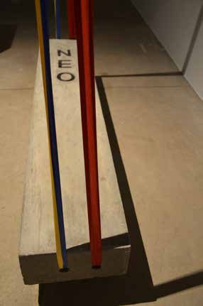

Pega Monet, Pega Manet
1986 — do catálogo Experiência Tumulto III (CCBB, 2015)
PEGA MONET PEGA MANET 1986
Da antologia Instalações Barja
Pega Monet, Pega Manet — Marília Panitz
- 1986 DA2 Mognus Dei -1999 Notas: 1 Estes trabalhos estiveram expostos em Brasília, no Conjunto Cultural da Caixa, em Buenos Aires, no Centro de Arte Moderno de Quilmes e em Madri, no Centro Cultural El Cruce, cada um deles estabelecendo uma conversa com o lugar em que se instalou (em Madri, por exemplo, contou com a colaboração dos cegos que vendem bilhetes de loteria pelas ruas da cidade). 2 Em sua versão original, a “Burro sem Rabo - Experiência Tumulto - I” foi desenvolvida em parceria com performances de Márcia X e Alex Hamburger, nos anos 80, no Rio de Janeiro. A segunda foi realizada em Brasília, em 2002, numa reelaboração da primeira, como comentário de um dos artistas participantes, a partir de suas questões pessoais, mas mantendo algo da versão original: o trânsito entre a rua e a galeria e o diálogo com outros artistas, presentes na mostra, como é o caso de Ana Miguel, com quem Barja estabelece uma conversa que resulta no seu Livro de Barriga e numa obra em torno de Bataille, com a qual a artista participa da nova “Experiência Tumulto - II”, em Brasília. 3 Barthes, Roland “A Metáfora do Olho”, In, Ensaios Críticos, Lisboa: Edições 70, 1977, p. 328-339. 4 Pega Manet e Pega Monet são variações em torno de um jogo de acaso e perícia: no primeiro, o artista dispõe sobre um suporte preto, as estruturas precárias de uma barraca de camelô, abandonada na rua e a colore nas cores básicas: vermelho, azul e amarelo. No segundo é o jogo de varetas (cujas cores são vermelho, azul e amarelo) que é disposto como obra. 5 Em um trecho de Aspiro ao grande labirinto, Hélio Oiticica afirma algo que o trabalho de Barja parece citar: “ Quem diria que Mondrian, p. ex., não está próximo de Wols, tão próximo na expressão de grandeza interior e de concepção de vida. Mondrian funda o espaço ilimitado, uma dimensão infinita, dentro da “geometrização” que lhe atribuem, fazendo o mesmo que Wols na sua “não geometrização”. Ambos criam o “fazer-se” do espaço, dando-lhe absoluta transcendência, dimensão infinita. (...) Pensando nos dois, penso em Lao Tse. São ambos pintores do espaço, têm a faculdade de dar ao espaço dimensão infinita e colocam a pintura numa posição ética e vital de profundíssima significação. Nesse sentido ambos são os mais significativos precursores do desaparecimento da pintura como veio até agora sendo entendida.”, In, Catálogo Hélio Oiticica, Centro de Arte Hélio Oiticica, Rio de Janeiro, 1996. p.44 6 Dicionário Houaiss da Língua Portuguesa http://houaiss.uol.com.br/busca.jhtm? verbete = equação & stype = k 7 “A questão é que a cópula (talvez fosse melhor dizer a combinação) de dois hieróglifos da série mais simples não deve ser considerada como uma soma deles e sim como seu produto, isto é, como um valor de outra dimensão e outro grau; cada um deles, separadamente corresponde a um objeto, a um fato, mas sua combinação corresponde a um conceito. Do amálgama dos hieróglifos isolados saiu o ideograma. A combinação de dois elementos suscetíveis de serem “pintados” permite a representação de algo que não pode ser retratado. Por exemplo: o desenho da água e o desenho de um olho significam Chorar. (...) Sim, é exatamente isto que fazemos no cinema, combinando tomadas que pintam, de significado singelo e conteúdo neutro para formar séries e contextos intelectuais”. (...) O conceito é uma fórmula, pura e simples; sua ornamentação (uma expansão devida aos materiais adicionais) transforma a fórmula em imagem uma forma acabada. Exatamente assim, embora em sentido contrário, como um processo de pensamento primitivo o pensamento imagístico, deslocado até um ponto definido, acaba-se transformando em raciocínio conceitual. Eisenstein, Serguei, "O princípio cinematográfico e o ideograma", In, Campos, Haroldo de, Ideograma - lógica, poesia e linguagem, p. 149-166. deitado eternamente H O monet márcia X c/ m.duchamp DA fike são joão beuys expressosionista
Textos que falam desta obra
PEGA MONET PEGA MANET 1986 FOTO Daniel Mira
Catálogo Experiência Tumulto III — pág. 18eiros e europeus: Evgene Bavcar, Mercedes Replinger, Adolfo Montejo Navas, Roland Campos, Angélica Madeira, Bené Fonteles e Marília Panitz produziram um conjunto importante de reflexões que acompanham esta compilação de registros que sobreviveram ao tempo. É possível, desse modo, aqui percorrer vinte anos de história por meio dos projetos e das instalações: “Experiência Tumulto (1985)”, “Cubo Cruz Lápide (1985)”, “O Profeta e a Jaguatirica (1985-86)”, “DO AKD-MICO AO POLE-MICO (1986)”, “Mognus Dei (1990)”, “O Sol de Goethe (1999)”, “São João Beuys (1990)”, “Ser ou não Ser, Ao Gullar (1993)”, “Pega Manet/De Onde Vem A Escuridão (1986)”, “TV Anal (1999)”, “Hermógenes (1999)”, “Obranome (2003)” e “Cultura X Natureza = Barbárie (1998/2005)” Marília Panitz, em seu texto “Ao que importa, uma resposta”, propõe um itinerário de leitura das obras de Barja, a partir do conceito de equação, tão caro ao artista. Nos “enigmas de equações visuais” dos comentários-construções de Barja, a autora destaca a condensação de sentidos que tem como ferramenta o humor. Apropriando-se do aço pontiagudo da ironia, munido de um riso de inspiração oswaldiana, o antropófago Barja, sob uma “forte influência do
Livro Instalações Barja — pág. 5Joseph, animal religioso: Desafiado a propor sua versão sobre o olhar contemporâneo em torno de Joseph Beuys, Barja propôs uma outra caixa/bicho, ou um tabernáculo zoomorfizado (talvez radicalizando a metaforização do termo que nomeia este pequeno altar portátil, dando-lhe a acepção de corpo como lugar protetor da alma). Seu interior é uma cuba dourada deslocada da função original de instrumento de barbear receptáculo de gordura de carneiro. Exposta à luz, ela apresenta as variações de estado da matéria orgânica (entre sólido e líquido, dependendo do calor e da incidência da luz). mognus dei pega manet pega monet DA
Livro Instalações Barja — pág. 8escobre ser Lygia Clark? ...Uma proposta poética que dê conta do inusitado do fato (que é real). Uma outra lápide talvez. Um FIKE que desfia os fios da proposta da modernidade levada ao extremo (seu fim). As fitas amarelas, azuis e vermelhas, justa homenagem a quem desafiou esses extremos e eliminou fronteiras entre arte e as (outras) coisas do mundo (com seus muitos outros fios desfiados em várias obras). Que deixar para o mundo, Mondrian? Fitas amarelas, azuis e vermelhas que comparecem recorrentemente como metáfora de um pensamento sobre (de) pintura como em De onde vem a escuridão ou em “ Pega Manet ”[4]. No primeiro trabalho, elas são elos entre as partes que não conversam necessariamente entre si, são o sustentáculo (impossível) do balanço/barra de concreto NEO e são a água da fonte que sai da boca do leão barroco na tela negra de onde a cabeça se projeta... Ou um possível caminho entre a inscrição no excesso expressivo e a ilusão da economia do mínimo, cor pura e forma ortogonal (caminho percorrido pelas mesmas tiras da obra para Lygia). A água de Giverny é aqui: Pensar pintura e produzir objeto. Em um sobrevôo sobre a história da arte, um pouso na água. Não aquela água sóli
Livro Instalações Barja — pág. 9foi realizada em Brasília, em 2002, numa reelaboração da primeira, como comentário de um dos artistas participantes, a partir de suas questões pessoais, mas mantendo algo da versão original: o trânsito entre a rua e a galeria e o diálogo com outros artistas, presentes na mostra, como é o caso de Ana Miguel, com quem Barja estabelece uma conversa que resulta no seu Livro de Barriga e numa obra em torno de Bataille, com a qual a artista participa da nova “Experiência Tumulto - II”, em Brasília. 3 Barthes, Roland “A Metáfora do Olho”, In, Ensaios Críticos, Lisboa: Edições 70, 1977, p. 328-339. 4 Pega Manet e Pega Monet são variações em torno de um jogo de acaso e perícia: no primeiro, o artista dispõe sobre um suporte preto, as estruturas precárias de uma barraca de camelô, abandonada na rua e a colore nas cores básicas: vermelho, azul e amarelo. No segundo é o jogo de varetas (cujas cores são vermelho, azul e amarelo) que é disposto como obra. 5 Em um trecho de Aspiro ao grande labirinto, Hélio Oiticica afirma algo que o trabalho de Barja parece citar: “ Quem diria que Mondrian, p. ex., não está próximo de Wols, tão próximo na expressão de grandeza interior e de concepção de vida. Mo
Livro Instalações Barja — pág. 11pega monet pega manet - 1986
Livro Instalações Barja — pág. 51pega monet pega manet - 1986
Livro Instalações Barja — pág. 53pega monet pega manet - 1986
Livro Instalações Barja — pág. 54

Deitado Eternamente
1985 — do catálogo Experiência Tumulto III (CCBB, 2015)
1985
Da antologia Instalações Barja
A morte de Lygia — Marília Panitz
A morte de Lygia: O que fazer sozinho e anônimo em um velório de outro anônimo que depois se descobre ser Lygia Clark? ...Uma proposta poética que dê conta do inusitado do fato (que é real). Uma outra lápide talvez. Um FIKE que desfia os fios da proposta da modernidade levada ao extremo (seu fim). As fitas amarelas, azuis e vermelhas, justa homenagem a quem desafiou esses extremos e eliminou fronteiras entre arte e as (outras) coisas do mundo (com seus muitos outros fios desfiados em várias obras). Que deixar para o mundo, Mondrian? Fitas amarelas, azuis e vermelhas que comparecem recorrentemente como metáfora de um pensamento sobre (de) pintura como em De onde vem a escuridão ou em “ Pega Manet ”[4]. No primeiro trabalho, elas são elos entre as partes que não conversam necessariamente entre si, são o sustentáculo (impossível) do balanço/barra de concreto NEO e são a água da fonte que sai da boca do leão barroco na tela negra de onde a cabeça se projeta... Ou um possível caminho entre a inscrição no excesso expressivo e a ilusão da economia do mínimo, cor pura e forma ortogonal (caminho percorrido pelas mesmas tiras da obra para Lygia). A água de Giverny é aqui: Pensar pintura e produzir objeto. Em um sobrevôo sobre a história da arte, um pouso na água. Não aquela água sólida, fruto da armadilha/trompe l'œil, mas naquela outra, pura evanescência que dança à frente dos olhos, a partir da aventura impressionista, pura abstração. A equação/obra resultante, H O Monet trata de definir um espaço tridimensional geometricamente inscrito sobre o suporte, onde a experiência do olho com a água deve se dar dentro da circunscrição espacial, fazer a “mágica” da luz e sombra, sua projeção que provoca a impressão visual da água. Escritura/imagem conceitual que desvela as formas de produzir realidade pela ficção, o diedro em que ela se inscreve é aquele da geometria proposta na obra do outro HO [5] presente, é claro, como Lygia, para afirmar certa subversão temporal... ou certa perspectiva que sobrepõe as diversas aventuras desses inventores de imagens poéticas (frente às quais nosso olhar já não pode ser o mesmo). Respondendo ao crítico e outras arquiteturas: artecomentário... artenotação. Com uma forte influência do pensamento neoconcreto em seu trabalho e na sua forma de abordar a arte o que o resulta, inclusive, em sua dissertação de mestrado Barja, em determinado momento, se vê frente à contingência de ouvir, do grande teórico do movimento, a afirmação da “morte da arte”. Seu comentário-resposta é uma obra/mausoléu, uma declaração de discordância pelo estabelecimento de um jogo de espelhos, onde o vaticínio se volta para quem o pronuncia. Jogo construtivo que se repete na fragilidade da estrutura de outro trabalho (outro mausoléu), sua pirâmide de copos com líquidos coloridos, construída sobre um espelho, sua Queóps Brasilis. o profeta e a jaguatirica natureza x cultura = barbárie
Textos que falam desta obra
DEITADO ETERNAMENTE FOTO Daniel Mira DEITADO ETERNAMENTE 1985
Catálogo Experiência Tumulto III — pág. 20da e de travessia, não cessa de dissolver-se e transformar-se. Bachelard lembra que o sonhador da água é um ser em vertigem que deixa constan- temente desmoronar algo de si. Para ele a água é matéria que está sempre prestes a tornar-se outra. Os híbridos e os fora de lugar provocam estranha- mentos, como provocaram os monstros míticos do medievo ou os ready made de Marcel Duchamp. Tu- multuam, des-consertam, des-estabilizam e levam a rearranjos em nossa percepção. Obra síntese da exposição Experiência Tumulto III, Jonas carrega a trajetória do artista, que vem praticando desloca- mentos desde Deitado eternamente de 1986. É um tirar coisas do lugar e reordenar, mas não, sem antes passar pelas entranhas do tumulto antropofágico, que pode instigar territórios de existência e alterar os modos de subjetivação hegemônicos. No caldeirão de bruxas da arte contemporânea, me- xem-se poções que misturam procedimentos trazi- dos da história da arte. Em Jonas, além de evocar o mítico/bíblico Jonas, engolido pela baleia e as práti- cas medievais da fundição, o artista nos remete ao dadaísmo e ao minimalismo, pois pratica desloca- mentos e repetições. As vértebras aladas expostas em forma de uma
Catálogo Experiência Tumulto III — pág. 78va-riáveis 2- Redução de uma questão, um problema intrincado, a pontos simples e claros, para facilitar a ob-tenção de uma solução.[6] Uma forma de organizar as coisas sob uma aparência de casualidade e caos. Uma economia de signos para evocar diferentes narrativas. Condensação de sentidos, cuja ferramenta é o humor... Assim como naquela cama de campanha de estrutura verde, cuja lona é do amarelo da bandeira nacional e, à maneira de um travesseiro, já fora de lugar pelo uso, está jogado o círculo azul, onde a inscrição positivista que nos constitui como nação é substituída pelo verso do hino “Deitado eternamente...”. Ou talvez, como na proposta de (di)fusão entre a expressão (já antropofágica) do barroco brasileiro e o seu suporte de florescimento: a “terra brasilis”. Essa é talvez uma pré (re) leitura da equação proposta no jogo dos aquários “Natureza X Cultura = Barbárie” : seu livro/equação “O Profeta e a Jaguatirica”, no qual o Oséias de Aleijadinho (aquele profeta que simboliza a infidelidade do povo judeu ao verdadeiro Deus) divide o espaço com o couro estendido do felino, surgindo por detrás de dois recobrimentos o que quase submerge as imagens, uma superfície de plumas; e a
Livro Instalações Barja — pág. 10s que pintam, de significado singelo e conteúdo neutro para formar séries e contextos intelectuais”. (...) O conceito é uma fórmula, pura e simples; sua ornamentação (uma expansão devida aos materiais adicionais) transforma a fórmula em imagem uma forma acabada. Exatamente assim, embora em sentido contrário, como um processo de pensamento primitivo o pensamento imagístico, deslocado até um ponto definido, acaba-se transformando em raciocínio conceitual. Eisenstein, Serguei, "O princípio cinematográfico e o ideograma", In, Campos, Haroldo de, Ideograma - lógica, poesia e linguagem, p. 149-166. deitado eternamente H O monet márcia X c/ m.duchamp DA fike são joão beuys expressosionista
Livro Instalações Barja — pág. 11deitado eternamente - 1986
Livro Instalações Barja — pág. 44Expresso Sionista Deitado eternamente..-1986. and possessing another function), suggests an ambiguous relationship between absorbing and expelling (swallowing and defecating). More metonymic operation than metaphor, as already pointed out by Barthes in his essay on Bataille's Story of the Eye, the anus is standing in for the body, for the eye, giving to this latter an excretory function (by selecting or digesting what is seen). The concreteness (and ephemerality) of words: The idea of "eating" ideas comes to us from the early part of the 20th century, when a metaphor was made of the cannibalism practiced among the natives of the
Livro Instalações Barja — pág. 88


O Casamento de Márcia X com Marcel Duchamp
1985 — do catálogo Experiência Tumulto III (CCBB, 2015)
O CASAMENTO DE MARCIA X COM MAR- CEL DUCHAMP 1985
O CASAMENTO DE MARCIA X COM MARCEL DUCHAMP O ângulo adequado para se poetizar o mundo: reduzindo “um problema intrincado a pontos simples e claros...”. Di- versão e complexidade, como deve ser a vida. Marília Panitz - extraído do livro Ins- talações Barja - 2005, texto “ao que importa uma resposta” . THE MARRIAGE OF MARCIA X WITH MARCEL DUCHAMP The proper angle for poeticizing the world: reducing “a complex prob- lem to simple, clear points…”. Complexity and fun, just as life should be. Marília Panitz - extract from Insta- lações Barja - 2005 / “The relevance of an answer”.
Textos que falam desta obra
O CASAMENTO DE MARCIA X COM MAR- CEL DUCHAMP 1985
Catálogo Experiência Tumulto III — pág. 23O CASAMENTO DE MARCIA X COM MARCEL DUCHAMP O ângulo adequado para se poetizar o mundo: reduzindo “um problema intrincado a pontos simples e claros...”. Di- versão e complexidade, como deve ser a vida. Marília Panitz - extraído do livro Ins- talações Barja - 2005, texto “ao que importa uma resposta” . THE MARRIAGE OF MARCIA X WITH MARCEL DUCHAMP The proper angle for poeticizing the world: reducing “a complex prob- lem to simple, clear points…”. Complexity and fun, just as life should be. Marília Panitz - extract from Insta- lações Barja - 2005 / “The relevance of an answer”. FOTO Daniel Mira
Catálogo Experiência Tumulto III — pág. 25ino, surgindo por detrás de dois recobrimentos o que quase submerge as imagens, uma superfície de plumas; e a transparência do acetato estampado pelos prefixos superlativos (afinal é barroco, é antropofagia cultural e é natureza superlativa... e morta): hiper, super, supra... Ou ainda, na matemática subvertida em que a soma de duas parcelas implica em um produto que é mais do que elas é efeito de cópula (como propunha Eisenstein em sua análise da função do ideograma comparado à montagem cinematográfica [7]), sempre mais do que se espera... sempre outra coisa. Um trabalho chamado Futurista - O Casamento de Mme. X com Marcel Duchamp parece colocar em jogo esta possibilidade: um fantasma/manequim, usando um vestido (de noiva?) de Márcia X, que tem no lugar da cabeça um ventilador da década de 30, da marca Marinetti (!!). Como anotação/comentário, está aí o (um dos) produto(s) do percurso de rupturas da história da arte no século XX. Amálgama e inscrição efêmera... para se guardar a fórmula e reaplicá-la. O ângulo adequado para se poetizar o mundo: reduzindo “um problema intrincado a pontos simples e claros...”. Diversão e complexidade, como deve ser a vida. Marilia Panitz Mestre em Te
Livro Instalações Barja — pág. 10o casamento de Mme X com M. Duchamp - 1986
Livro Instalações Barja — pág. 57the prophet and the ocelot nature x culture = barbarism o casamento de Márcia X com Marcel Ducham The death of Lygia: What would you do alone and anonymous at the wake of another anonymous person whom you later discovered to be Lygia Clark?… A poetic proposal that recognizes the unusualness of the fact (which is real). Maybe another tombstone. A FIKE that challenges the fiber of the modernist proposal taken to its extreme (its end). The red, blue, and yellow ribbons offer fitting homage to one who challenged these extremes and eliminated the barriers between art and (other) things of this world (with its many other fibers challenged in various works). What to leav
Livro Instalações Barja — pág. 89m behind two coverings that nearly submerge the images: first, a coating of feathers and, next, a transparent sheet of acetate imprinted with superlative prefixes (it is, after all, Baroque, it is cultural anthropophagy, it is nature, both superlative… and dead): hyper, super,supra... Or, even, in that subversive mathematics where the whole is greater than the sum of its parts, a copulative effect (as put forth by Eisenstein in his comparison of the function of the ideogram with cinematographic editing) always producing more than expected,… always something new. A work entitled Futurist – the marriage of Márcia X and Marcel Duchamp seems to hold out this possibility: a ghost/mannequin, wearing a dress (bridal gown?) of Marcia’s, has, where the head should be, a Marinetti (!!) fan from the 30’s. As a footnote/commentary, right there is (one of) the product(s) of the procession of ruptures in art history of the 20th century. Fusion and ephemeral inscription…the formula may be saved and re-applied. The angle is just right for poeticizing the world: reducing “a complex problem to simple, clear points…”. Fun and complex, just as life should be. Marilia Panitz MA in Art History and Theor
Livro Instalações Barja — pág. 90the marriage of Márcia X and Marcel Duchamp Prophet and the Ocelot - 1986 DA2 Mognus Dei -1999 laid out eternally… H O monet Mme X / m.duchamp DA fike saint john beuys zionistexpress Notes: 1 - These works were exhibited in Brasilia, at the Conjunto Cultural da Caixa; in Buenos Aires, at the Centro de Arte Moderno de Quilmes; and in Madrid, at the Centro Cultural El Cruce; each time, a conversation was established with the local community (in Madrid, for example, blind lottery-ticket vendors from the streets were engaged in participating). 2 - The original 80’s version of TurbulenceExperience was develope
Livro Instalações Barja — pág. 91he monster’s dwelling The fantastic beast is always an offense to Creation, probably because it implies that something was left lacking the first time. Salah Stétié slyly insinuates that the appearance of exotic man-made bestiaries is nothing more than a symptom of the limits of God’s imagination (44). On the other hand, these fictitious animals also bear in their features evidence of all the anguish and terror projected onto them by humans, for whom they, like all other animals, whether wild or domestic, represent alien, impenetrable beings. Why not just say that this marvelous fauna, unholy marriage of dream and nightmare, is the symptom of the limits of man’s reality? Balanced on a line between God and Man, we begin to contemplate the question of objects, whether the inanimate is capable of distilling a live organism. The resulting hybrid body might be like the strange creature proffered by Wagner Barja in São João Beuys (1990) (St. John Beuys), in which a small household shrine dedicated, in this case, to St. John the Baptist, bizarrely metamorphoses into an animal appointed with a large lambskin tail. to be or not to be, for Gullar
Livro Instalações Barja — pág. 104

Queops Brasilis
1990 — do catálogo Experiência Tumulto III (CCBB, 2015)
Textos que falam desta obra
QUEOPS BRASILIS 1990
Catálogo Experiência Tumulto III — pág. 26

São João Beuys
1993 — do catálogo Experiência Tumulto III (CCBB, 2015)
SÃO JOÃO BEUYS - Uma irônica e lúcida associa- ção entre as travessias de São João e Beuys: am- bos profetas no deserto, anunciando uma men- sagem cujo significado completo, só no futuro, em função dos acontecimentos posteriores, tem sentido. A eleição de Beuys para destacar a di- ficuldade da transmissão da arte na moderni- dade é, realmente, apropriada. Como diz Angel González: “uma peça de Duchamp produz inter- pretações, uma de Matisse, produz sensações. Porém, uma imagem de Beuys produz novas imagens, como se às imagens de Beuys lhes fal- tara algo: estiveram incompletas. Não se trata pois ou não me parece, de um caso de hipnose pedagógica, senão de exibição persuasiva de algo imperfeito, insuficiente, não resolvido” Mercedez Replinger - extraído do livro Instalações Barja - 2005, do texto“ Documentos incertos no lu- gar do monstro”. ST. JOHN BEUYS - A lucid and ironic association found in the journeys of St. John and Beuys: both were prophets in the desert, announcing a mes- sage whose complete significance would make sense only in the future, after posterior events had come to pass. Beuys really is an appropriate choice to illustrate the difficulties of disseminat- ing art in modern times. As Angel González says, “a Duchamp produces interpretations, a Matisse, sensations. Nevertheless, an image of Beuys’s generates new images, as if Beuys’ work lacked something: they were incomplete. It doesn’t seem to me - it doesn’t look like - a case of pedagogic hypnosis, but rather of the persuasive exhibition of something imperfect, insufficient, unresolved.” Mercedez Replinger - extract from Instalações Barja - 2005 / “Uncertain documents in place of the monster”
Da antologia Instalações Barja
São João Beuys — Mercedes Replinger González
”São João Beuys” (1990), neste sentido, é exemplar. Recordemos, por exemplo, uma peça em bronze de Beuys titulada SaFG-SaUG cujas siglas significam : Sonnen Au Fgang-Sonnen UnterGang (saída do sol-ocultação do sol) uma obra de 1953-58. Esta peça, pouco conhecida, é, sem dúvida, importante no conjunto do trabalho do artista, pois segundo suas próprias declarações, a partir dela desenvolve seu pensamento de escultura prolongada, do conceito ampliado de arte (erweiterter Kunstbegriff): “a teoria está baseada na passagem, no trânsito do material caótico à forma colocada em ordem pelo movimento escultural: caos/ordem; indeterminado/determinado; orgânico/movimento/cristalino; quente/frio; expansão/contração” (46). A peça de Barja, precisamente, se move nessas coordenadas, entre a ocultação e a saída do sol; o sebo do carneiro se transforma, pelo calor, em energia, vital elemento ativo da passagem do caos à diferenciação. Entre a homenagem e a crítica, Barja prolonga a capacidade que o artista alemão via no calor para elaborar formas plásticas. No trânsito do fluido ao sólido através do calor, cumpre-se com uma forma plástica como processo primário que representa a energia autônoma e criadora, o trânsito de uma substância informe, espiritual, que configura outra matéria cristalina, o pensamento ativo. A matéria não é opaca à comunicação, ela é infinitamente maleável. Barja recorre ao conceito de escultura ampliada, expandida como um organismo vivo. Porém, não a confronta, não a deixa exterior à peça, a faz surgir de seu próprio interior; uma segregação biomórfica do objeto que se constrói através das palavras, os discursos que esse oratório congrega como uma boca voraz, realmente faminta. Barja realiza nesta obra, a transmutação da matéria em arte no interior de um animal, em uma forma orgânica que contradiz as pretensões do homem de diferenciar-se da natureza a que pertence. “São João Beuys” (1990), em efeito, é uma muito boa translação da utilização do calor como experiência plástica primordial. Porém, se mantêm a inevitável separação entre o homem, o pensamento e a vida. A própria ironia do conjunto questiona o objetivo do oratório, no museu e na igreja: a arte como meio de cura. A arte não cura as feridas. Barja não parece crer nas capacidades redentoras ou emancipadoras da arte e da ciência contemporânea. Entre o que o homem pensa, deseja, inclusive imagina e aquele que por natureza é, não existe correspondência. O animal é alheio por excelência, o outro realmente incompreensível. A equação parece concluída: “Cultura X Natureza = Barbárie” (1997 -2004). Ao final, dois elementos incompatíveis, provocam a destruição. De certa forma o artista parece colocar, diante de nossos olhos, o negativo do sonho romântico que representava Beuys, sua confiança na possibilidade de utilizar a energia dos animais por alcançar a unidade desejada que já, muito antes, havia anunciado, por exemplo, Schiller quando invejava a proximidade dos gregos com a natureza: “são o que nós fomos; são o que devemos voltar a ser. Temos sido natureza como eles, e nossa cultura deve retornar pelo caminho da razão e da liberdade à natureza”. Mas a equação razão e natureza só tem produzido destruição. A coisa parece que vem de antigamente, desde o princípio: escutemos de novo a Mefistófeles quando se enfrenta com o Criador, esse que Goethe denomina O Senhor, e a toda a sua criação e com o dedo apontado assinala como a origem dos males do homem, esse tão funesto desejo que O perderá: “Do sol e dos mundos nada há o que dizer, e só vejo como se cansam os mortais. O raquítico deus da terra segue sendo de igual natureza e tão extravagante como o primeiro dia. Um pouco melhor vivera se não lhe houvesses dado esse fogo da luz celestial, a qual dá o nome de Razão e a qual não utiliza, senão para ser mais bestial que toda besta” (47) . A razão parece um instrumento insuficiente para que o homem possa, se o queira, aproximar-se da natureza. ”Cultura X Natureza = Barbárie” (1997-2004), é um título expressado como um beco sem saída, onde um pequeno peixe nada com movimentos repetitivos, no luminoso líquido elétrico do monitor de televisão que, como um aquário, é introduzido num grande recipiente transparente cheio de água. Embora, saibamos, o peixe só pode observar, alheio a nossa ansiedade, seu reflexo, até o infinito; mesmo assim, parece que, na realidade, é capaz de dirigir-nos uma olhada. Talvez o problema seja as indagações. Nessa instalação, o espectador não deve ficar frente ao objeto
Textos que falam desta obra
isso ele se apropria de ícones e mitos, textos e objetos, conceitos e saberes; artistas e profetas, poetas e pensadores são também convocados. São como caracteres a serem recombinados nesta vasta e mundana biblioteca. Ele os seleciona e os associa de modo improvável, por vezes risíveis, que desvelam as arbitrariedades dos signos e dos discursos, os pontos cegos que sempre sobressaltaram as artes, as ilegibilidades que as assombraram. Referências que a princípio nos pareceriam díspares vão sendo suturadas, pro- duzindo novos sentidos, outros abismos. João Batista encontra-se com outro João, o Beuys; o sol /olho de Goethe transforma-se na quinta nota musical da escala dó maior, sol, abrindo-se ao ouvido; o olho, órgão privilegiado do conhe- cimento e da transcendência vertical (do sol de Platão à luz divina) converte-se no olho-ânus de Bataille. No intervalo entre o visível e o invisível, o dito e o silenciado, a revelação e a cegueira, a linguagem e o mundo, os nexos usuais são rompi- dos. Um intervalo que acolhe as opacidades para abrir a arte aos encontros ilimitados, mas que não cessa de confidenciar sua indeterminação e seus desajustes. Vemos por enigmas, ouvimos por dis- sonânc
Catálogo Experiência Tumulto III — pág. 8FOTO Daniel Mira SÃO JOÃO BEUYS 1993
Catálogo Experiência Tumulto III — pág. 30FOTOS Daniel Mira SÃO JOÃO BEUYS - Uma irônica e lúcida associa- ção entre as travessias de São João e Beuys: am- bos profetas no deserto, anunciando uma men- sagem cujo significado completo, só no futuro, em função dos acontecimentos posteriores, tem sentido. A eleição de Beuys para destacar a di- ficuldade da transmissão da arte na moderni- dade é, realmente, apropriada. Como diz Angel González: “uma peça de Duchamp produz inter- pretações, uma de Matisse, produz sensações. Porém, uma imagem de Beuys produz novas imagens, como se às imagens de Beuys lhes fal- tara algo: estiveram incompletas. Não se trata pois ou não me pa
Catálogo Experiência Tumulto III — pág. 31CULTURA X NATUREZA = BAR- BÁRIE - O animal é alheio por excelência, o outro realmente incompreensível. A equação parece concluída: “Cultura X Natureza = Barbárie” (1997 -2004). Ao final, dois elemen- tos incompatíveis, provocam a destruição. De certa for- ma o artista parece colocar, diante de nossos olhos, o ne- gativo do sonho romântico que representava Beuys, sua confiança na possibilidade de utilizar a energia dos ani- mais por alcançar a unidade desejada que já, muito antes, havia anunciado, por exem- plo, Schiller quando invejava a proximidade dos gregos com a natureza: “são o que nós fo- mos; são o que devemos vol- tar a ser. Temos sido natureza como eles, e nossa cultura deve retornar pelo caminho da razão e da liberdade à na- tureza”. Mercedes Replinger González - extraído do livro Instalações Barja - 2005; do texto“Documentos in- certos no lugar do monstro”. CULTURE X NATURE = BARBA- RISM - Animals are foreign par excellence, the truly inc
Catálogo Experiência Tumulto III — pág. 44myths, texts and objects, concepts and bodies of knowledge. Artists and pro- phets, thinkers of the art and the world, are also summoned. They are characters to be recombined in this vast and munda- ne library. He selects them and associates them in improbable connections, at times laughable parodies that show the arbitra- riness of signs and discourses, the blind spots that always take the arts by assault, the illegibilities that haunt them. Referen- ces that initially seemed odd to us start being stitched, connected, producing new meanings, new abysses. John the Baptist meets another John, Beuys; the sun/ eye of Goethe turns into the fifth musical note of the C scale ope- ning itself to the ears; the eye, knowled- ge’s and vertical transcendence’s privile- ged organ (from Plato’s sun to the divine light) converts into Bataille’s anus-eye. In the interval between visible and invisible, what is said and what is silenced, revela- tion and blindness, language and world, the usual nexus is ruptured. An interval that receives the opacities in order to open art to unlimited encounters, but that does not stop revealing its indeterminations and misfits. We see through enigmas, hear throug
Catálogo Experiência Tumulto III — pág. 105s trabalhos de Barja, uma série de teóricos e artistas brasileiros e europeus: Evgene Bavcar, Mercedes Replinger, Adolfo Montejo Navas, Roland Campos, Angélica Madeira, Bené Fonteles e Marília Panitz produziram um conjunto importante de reflexões que acompanham esta compilação de registros que sobreviveram ao tempo. É possível, desse modo, aqui percorrer vinte anos de história por meio dos projetos e das instalações: “Experiência Tumulto (1985)”, “Cubo Cruz Lápide (1985)”, “O Profeta e a Jaguatirica (1985-86)”, “DO AKD-MICO AO POLE-MICO (1986)”, “Mognus Dei (1990)”, “O Sol de Goethe (1999)”, “São João Beuys (1990)”, “Ser ou não Ser, Ao Gullar (1993)”, “Pega Manet/De Onde Vem A Escuridão (1986)”, “TV Anal (1999)”, “Hermógenes (1999)”, “Obranome (2003)” e “Cultura X Natureza = Barbárie (1998/2005)” Marília Panitz, em seu texto “Ao que importa, uma resposta”, propõe um itinerário de leitura das obras de Barja, a partir do conceito de equação, tão caro ao artista. Nos “enigmas de equações visuais” dos comentários-construções de Barja, a autora destaca a condensação de sentidos que tem como ferramenta o humor. Apropriando-se do aço pontiagudo da ironia, munido de um riso de inspiração o
Livro Instalações Barja — pág. 5estrategicamente, no vórtice do cruzeiro o termo latino Magnus Dei, assim, a armadilha obranome de Barja, encontra-se “pronta para mexer com a imagética da consciência do branco visitante do espaço cultural”. Angélica Madeira, ao comentar a instalação “São João Beuys”, atenta para a infinidade de associações e sentidos existentes entre os imortais e carismáticos agitadores políticos que foram São João Batista e Joseph Beuys. Angélica Madeira destaca a influência do surrealismo e do dadá nesta obra em que convivem o lúdico, de um humor supostamente despretensioso, e a gravidade dos materiais, sobretudo da gordura de carneiro que, sob a ação da luz, solidifica-se e liquefaz-se ao longo do dia, causando estranheza e inquietação. Eygene Bavcar, cego aos onze anos de idade, põe-se “`a escuta de uma pintura” e mergulha no universo de “Hermógenes” e de “O Sol de
Livro Instalações Barja — pág. 6a das “Armadilhas Indígenas”, de Bené Fonteles: é o seu Mognos Dei, mais uma obranome que brinca de confundir referências e inscreve seu nome com a farinha de trigo da hóstia, matéria prima metaforizada na prática cristã, cujo ritual pressupõe a deglutição do corpo do Cristo. O que nos leva a uma outra referência certamente associada a “prática antropofágica” das tantas letras... àquela cabeceira sem cama do “DA²”, como equação e operação metonímica, uma declaração de filiação ideológica. Um Joseph, animal religioso: Desafiado a propor sua versão sobre o olhar contemporâneo em torno de Joseph Beuys, Barja propôs uma outra caixa/bicho, ou um tabernáculo zoomorfizado (talvez radicalizando a metaforização do termo que nomeia este pequeno altar portátil, dando-lhe a acepção de corpo como lugar protetor da alma). Seu interior é uma cuba dourada deslocada da função original de instrumento de barbear receptáculo de gordura de carneiro. Exposta à luz, ela apresenta as variações de estado da matéria orgânica (entre sólido e líquido, dependendo do calor e da incidência da luz). mognus dei pega manet pega monet DA
Livro Instalações Barja — pág. 8formar séries e contextos intelectuais”. (...) O conceito é uma fórmula, pura e simples; sua ornamentação (uma expansão devida aos materiais adicionais) transforma a fórmula em imagem uma forma acabada. Exatamente assim, embora em sentido contrário, como um processo de pensamento primitivo o pensamento imagístico, deslocado até um ponto definido, acaba-se transformando em raciocínio conceitual. Eisenstein, Serguei, "O princípio cinematográfico e o ideograma", In, Campos, Haroldo de, Ideograma - lógica, poesia e linguagem, p. 149-166. deitado eternamente H O monet márcia X c/ m.duchamp DA fike são joão beuys expressosionista
Livro Instalações Barja — pág. 11uma história; também, uma linguagem que incontestavelmente nos fala. Nos aproximaremos da obra de Wagner Barja precisamente através desse olhar, que é um escutar por meio de um itinerário traçado por algumas obras e instalações concretas que, entre outros temas, inter relacionam-se por certos aspectos: o problema da visibilidade e da invisibilidade da obra, desde as metáforas da luz até as da cegueira; a passagem da imagem e do texto ao objeto. Por último, as homenagens explícitas ao seu passado cultural e artístico, do qual sente herdeiro, em conflito. Desde Ferreira Gullar, Lygia Clark, J. Beuys até Aleijadinho; ou seja, segue um trajeto das vanguardas às raízes próprias do barroco brasileiro. Essa divisão não implica separação estrita, pois todos esses temas e conceitos aparecem em maior ou menor medida, em cada uma das peças e instalações, que representam em si mesmas um excesso e um resíduo, que se desdobra na obra seguinte e gera um processo contínuo de metamorfoses, e assim sublinhando o caráter aberto da criação artística. Olhar, nesse sentido, implica necessariamente teorizar, gerar um pensamento que se constrói com o próprio movimento dos olhos. Como já assinalara Goethe:
Livro Instalações Barja — pág. 13os limites da imaginação de Deus.(44). Porém, o traço de animal fictício evidencia-se na projeção humana de uma angústia e um terror ante esses seres impenetráveis, completamente alheios ao homem que são os animais, todos, inclusive aqueles familiares e domésticos. Dessa forma, essa maravilhosa fauna, aliança de um sonho e de um pesadelo, é o sintoma dos limites da realidade do homem. Entre uma e outra fronteira, a de Deus e a do Homem, podemos pensar que a coisa em si, o objeto por ele mesmo, é capaz de destilar um organismo vivo: um corpo híbrido, como o estranho animal que Barja propõe em “São João Beuys” (1990), metamorfose insólita de um pequeno oratório, dos que se usam nas casas para a devoção popular, neste caso, dedicado a São João Batista, transmutado num animal de grande rabo de pele de cordeiro. Se “OBRANOME” anulava as distâncias entre a imagem e a palavra, o nome e a coisa, “São João Beuys” (1990) funde a matéria inerte com o espécime vivo, cujas faces silenciosas abrigam em seu interior uma pequena vasilha dourada com sebo de carneiro, que situada estrategicamente: durante o dia, a luz do sol derrete o sebo, que volta ao estado sólido durante a noite. Um pequeno orat
Livro Instalações Barja — pág. 25”São João Beuys” (1990), neste sentido, é exemplar. Recordemos, por exemplo, uma peça em bronze de Beuys titulada SaFG-SaUG cujas siglas significam : Sonnen Au Fgang-Sonnen UnterGang (saída do sol-ocultação do sol) uma obra de 1953-58. Esta peça, pouco conhecida, é, sem dúvida, importante no conjunto do trabalho do artista, pois segundo suas próprias declarações, a partir dela desenvolve seu pensamento de escultura prolongada, do conceito ampliado de arte (erweiterter Kunstbegriff): “a teoria está baseada na passagem, no trânsito do material caótico à forma colocada em ordem pelo movimento escultural: caos/o
Livro Instalações Barja — pág. 26


Agulha no Palheiro
1999 — do catálogo Experiência Tumulto III (CCBB, 2015)
para nivelar visibilidades 1999 AGULHA NO PALHEIRO: Para nivelar visibilidades - Presença e ausência, distanciamento e proximidade. Por um instante que pode ser uma eternidade, visão e cegueira ficam iguala- dos ante a dificuldade de se encontrar algo olhando. Mercedes Replinger González - ex- traído do livro Instalações Barja - 2005. NEEDLE IN THE HAYSTACK: Equalizing visibilities - Pres- ence and absence, distance and proximity. For an instant that may feel like eternity, blindness and sight attain equality before the difficulty of finding something with the sight. Mercedes Replinger González - ex- tract from Instalações Barja - 2005.
Textos que falam desta obra
FOTO Daniel Mira AGULHA NO PALHEIRO para nivelar visibilidades 1999 AGULHA NO PALHEIRO: Para nivelar visibilidades - Presença e ausência, distanciamento e proximidade. Por um instante que pode ser uma eternidade, visão e cegueira ficam iguala- dos ante a dificuldade de se encontrar algo olhando. Mercedes Replinger González - ex- traído do livro Instalações Barja - 2005. NEEDLE IN THE HAYSTACK: Equalizing visibilities - Pres- ence and absence, distance and proximity. For an instant that may feel like eternity, blindness and sight attain equality before the difficulty of finding something with the sight. Mercedes Replinger Gonzál
Catálogo Experiência Tumulto III — pág. 33ue declinam os distintos tipos de representação: realismo, hiper realismo, realismo fantástico, são expostas, deslizando-se desordenadamente por uma tábua, como aquelas onde se exibem mercadorias, envolvendo com seus sons a figura do profeta Oséias que quer dizer salvação realizada pelo escultor Aleijadinho cuja sombra delimita o contorno, a sombra estatelada de uma Jaguatirica. Todo o conjunto coberto por penas como um manto. Uma peça que, não por casualidade, adota o formato de um autêntico retábulo como caixa de ressonância para interpretar os sinais, os indícios que orientam uma tradição. agulha no palheiro TV anal
Livro Instalações Barja — pág. 22ista colocou uma tv que só emite chuva ou neve, nenhuma imagem, só luz e uma lente de aumento, ridícula, pois não se vê nada. 9. Ibidem, p. 46 10. Mircea Eliade: História de las creencias y de las ideas religiosas III/1. Madrid, ed. Cristiandad, 1983. Pág. 152 y ss. 11. Jonathán Crary: Modernización de la visión en Poéticas del espacio. Barcelona, ed. Gustavo Gili, 2002, p.133. p.136 12. Barja valoriza a importância do entrelaçamento de luz e sombra, presença e ausência, distanciamento e proximidade. Por isso em muitas de suas obras esta ambígua realidade se dá constantemente, por exemplo, em Agulha no Palheiro (1988-89), onde o espectador deve encontrar entre o monte de palha, uma agulha de ouro, remetendo a um conhecido refrão que assinala a dificuldade de encontrar algo, como a agulha no palheiro. Uma agulha que efetivamente existe está sendo retransmitida por um aparelho. Nesta peça é indiferente ser vidente ou não, só através do tato é possível encontrar-la. A peça precisamente se intitula, instalação para nivelar visibilidades. Por um instante que pode ser uma eternidade, visão e cegueira ficam igualados ante a dificuldade de se encontrar algo olhando. 13. Jacques Derrida: Mé
Livro Instalações Barja — pág. 28agulha no palheiro - 1998
Livro Instalações Barja — pág. 65

O Sol de Goethe
1997 — do catálogo Experiência Tumulto III (CCBB, 2015)
O SOL DE GOETHE - Goethe estabelece a ana- logia entre o olho e o sol (...) na introdução de sua conhecida Farbenlehre (“Teoria das cores”), de 1810. A partir das teorias da visão do mundo antigo, ele não cansava de dizer e repetir que só o afim pode conhecer o afim e não há quem ne- gue essa afinidade direta do olho e da luz; assim como as palavras de um antigo místico, que em rimas alemães, podem ser assim expressas: Se o olho não tivesse sol, Como veríamos a luz? Sem a força de Deus vivendo entre nós, Como o divino nos seduz? O poeta alemão faz eco com a tradição grega que, desde Empédocles, via certa analogia entre o percebido e o órgão que percebe e que Aristó- teles, em De Anima, caracteriza como o conheci- mento do semelhante pelo semelhante; tradição posteriormente reelaborada no renascimento por Plotino. Assim, o tato estaria relacionado com a terra, o ouvido com o ar, a água úmida com o gosto e, por último, o mais luminoso dos sen- tidos, a visão, com a luz solar. O olho se conver- te em sol para assim poder refletir o universo. (...) Em “O Sol de Goethe” (1990), Barja remonta a uma antiga relação, ao antiquíssimo desejo de en- contrar correspondências, sempre sedutoras, en- tre a música e a luz. (....) Olhar com atenção é, pois, também escutar, visto que o olhar que pensa, sem dúvida, fala e escuta; assim produz um jogo inter- minável de intercâmbios entre a visão e o ouvido, entre as palavras que se vêem e as imagens que ouvem. Reciprocidade dos sentidos, das imagens e das palavras, também dos sentimentos e dos lu- gares. Não se trata de excluir a percepção sensível e sim de verificar que há um desdobramento da sensibilidade por meio de outra forma de sentir. “o que pode ser um ver que é um ouvir?“ Mercedez Replinger - extraído do livro Instalações Barja - 2005 / “A linguagem do olhar” / Marisa Flórido. GOETHE’S SUN - In the introduction to his well known 1810 Farbenlehre (Theory of Colours), Goethe establishes an analogy between eye and sun. Departing from the theories on the ancient world, he never ceased to say again and again that only like can understand like and that there’s no one that would deny this direct affinity between eye and light; just as the words of an old mystic, which in German rhymes can be thus expressed: If the eye didn’t have the sun, How should we see the light? Without the strength of God among us, How are we seduced by the divine? The German poet echoes the Greek tradition that since Empedocles saw such analogy between what’s perceived and the organ that perceives. This Aristotle characterizes, in De Anima, as a knowledge of the resembling to the resemblant; a tradition that would later be reworked by Ploti- nus during the Renaissance. Thus, the touch was related to the earth, the hearing to the air, the wet water with taste and, at last, the brightest sense, vision, with sunlight. The eye converts in the sun so it may reflect the universe. (...) In “Goethe’s Sun” (1990), Barja goes back to an ancient relation, to the ancient will of finding relations, always seductive, between music and light. (...) To look with attention is, thus, also to lis- ten, since the look that sees no doubt also speaks and hears; thus producing and endless game of interchange between vision and ear, between the words that are seen and the images that are heard. Reciprocity of the senses, of the images and words, also of feelings and places. It’s not about excluding the perception of sensitivity but to verify that there is an unfolding of sensibility through another way of feeling. “what is it to see that may also be heard?“ Mercedez Replinger - extract from the book Instalações Barja - 2005 / “The language of seeing”/ Marisa Flórido.
Da antologia Instalações Barja
O Sol de Goethe — Mercedes Replinger González
sua escola relacionavam a luminosidade e a obscuridade com o som nítido ou apagado e, inclusive, com um tom baixo ou alto (4). Porém, na Grécia, a componente visual de uma imagem dava-se ao mesmo tempo que o auditivo. Assim, a idéia de que as esferas celestes, inclusive o sol, fossem de bronze não alude apenas ao brilho ou a sua firmeza eterna, incontestável: o bronze é, dos céus, a parte visual de uma matéria sonora: o som dos astros que, em seu eterno roçar, produzem uma melodia de suprema beleza (5). Na mesma linha, Robert Flud, com o monochordon (1590), imagina o universo, seguindo a antiga cosmologia pitagórica, como um instrumento de um só som. Por outro lado, Newton propõe o número de sete cores que decompõem o prisma de luz porque sete são as notas de uma escala musical, projetadas numa espécie de escala em sol, derivada do chamado exachordon natural. A luz tratada como fenômeno ondulatório propicia essas correspondências entre canais sensoriais cuja razão de ser, sua quase necessária existência, está no fato de podermos entrar em ressonância com qualquer feito, seja de natureza sonora ou de natureza luminosa (6).Trata-se de um mito, sem dúvida; porém, como assinala Ruggero Pierontini, é um mito deslumbrante, que, ademais, implica que, apesar das diferenças ou precisamente por causa delas, podemos contemplar o mundo como uma totalidade, que se desprende em múltiplas metamorfoses. Um sonho, porém, a beleza da metáfora, a luz como som, permite a Barja rebaixar o tom de visibilidade desta instalação, deslocando a intensidade da percepção visual à acústica. O som, sem dúvida, é a qualidade mais desligada do objeto e de sua representação, aquela que mantém uma distância maior a respeito da visibilidade, igualando, situando, num mesmo nível, videntes e não-videntes. Literalmente o artista está pleiteando a abertura no espaço plástico de uma música ocular. Em “O Sol de Goethe” (1990) há, ainda, um limite para a visibilidade que se dá por outra correspondência também inscrita no título: a analogia que Goethe estabelece entre o olho e o sol, como apresenta na introdução de sua conhecida Farbenlehre (teoria das cores), de 1810. A partir das teorias da visão do mundo antigo, não cansava de dizer e repetir que só o afim pode conhecer o afim e não há quem negue essa afinidade direta do olho e da luz; assim como as palavras de um antigo místico, em verso alemão, pode-se expressar da seguinte maneira: “Se não fosse o olho da progênese do Sol como poderíamos dividir a luz? Se não vivesse em nós a própria força de Deus, como poderia nos entusiasmar o divino?” (7). O olho, semelhante ao sol, participa de sua mesma genealogia; por isso, disse Goethe, pode o homem contemplar a luz. O poeta alemão faz eco com a tradição grega que, desde Empédocles, via uma certa analogia entre o percebido e o órgão que percebe e que Aristóteles, em De Anima, caracteriza como o conhecimento do semelhante pelo semelhante; tradição posteriormente reelaborada no renascimento por Plotino. Assim, o tato estaria relacionado com a terra, o ouvido com o ar, a água úmida com o gosto e, por último, o mais luminoso dos sentidos, a visão, com a luz solar. O olho se converte em sol para assim poder refletir o universo. Georges Bataille, com humor corrosivo chamará de paródias essas correspondências e analogias do universo que se fundamentam na ânsia de encontrar a unidade absoluta, o sentido de totalidade do mundo. Porém, ele não renunciou a contribuir com uma metáfora de igual potência àquela de o sol de Goethe o sol de Goethe medusa
Textos que falam desta obra
de ícones e mitos, textos e objetos, conceitos e saberes; artistas e profetas, poetas e pensadores são também convocados. São como caracteres a serem recombinados nesta vasta e mundana biblioteca. Ele os seleciona e os associa de modo improvável, por vezes risíveis, que desvelam as arbitrariedades dos signos e dos discursos, os pontos cegos que sempre sobressaltaram as artes, as ilegibilidades que as assombraram. Referências que a princípio nos pareceriam díspares vão sendo suturadas, pro- duzindo novos sentidos, outros abismos. João Batista encontra-se com outro João, o Beuys; o sol /olho de Goethe transforma-se na quinta nota musical da escala dó maior, sol, abrindo-se ao ouvido; o olho, órgão privilegiado do conhe- cimento e da transcendência vertical (do sol de Platão à luz divina) converte-se no olho-ânus de Bataille. No intervalo entre o visível e o invisível, o dito e o silenciado, a revelação e a cegueira, a linguagem e o mundo, os nexos usuais são rompi- dos. Um intervalo que acolhe as opacidades para abrir a arte aos encontros ilimitados, mas que não cessa de confidenciar sua indeterminação e seus desajustes. Vemos por enigmas, ouvimos por dis- sonâncias. É esse lugar for
Catálogo Experiência Tumulto III — pág. 8O SOL DE GOETHE 1997
Catálogo Experiência Tumulto III — pág. 35O SOL DE GOETHE - Goethe estabelece a ana- logia entre o olho e o sol (...) na introdução de sua conhecida Farbenlehre (“Teoria das cores”), de 1810. A partir das teorias da visão do mundo antigo, ele não cansava de dizer e repetir que só o afim pode conhecer o afim e não há quem ne- gue essa afinidade direta do olho e da luz; assim como as palavras de um antigo místico, que em rimas alemães, podem ser assim expressas: Se o olho não tivesse sol, Como veríamos a luz? Sem a força de Deus vivendo entre nós, Como o divino nos seduz? O poeta alemão faz eco com a tradição grega que, desde Empédocles, via certa ana
Catálogo Experiência Tumulto III — pág. 36ts, concepts and bodies of knowledge. Artists and pro- phets, thinkers of the art and the world, are also summoned. They are characters to be recombined in this vast and munda- ne library. He selects them and associates them in improbable connections, at times laughable parodies that show the arbitra- riness of signs and discourses, the blind spots that always take the arts by assault, the illegibilities that haunt them. Referen- ces that initially seemed odd to us start being stitched, connected, producing new meanings, new abysses. John the Baptist meets another John, Beuys; the sun/ eye of Goethe turns into the fifth musical note of the C scale ope- ning itself to the ears; the eye, knowled- ge’s and vertical transcendence’s privile- ged organ (from Plato’s sun to the divine light) converts into Bataille’s anus-eye. In the interval between visible and invisible, what is said and what is silenced, revela- tion and blindness, language and world, the usual nexus is ruptured. An interval that receives the opacities in order to open art to unlimited encounters, but that does not stop revealing its indeterminations and misfits. We see through enigmas, hear through dissonances. It is t
Catálogo Experiência Tumulto III — pág. 105xão-diálogo. A partir dos trabalhos de Barja, uma série de teóricos e artistas brasileiros e europeus: Evgene Bavcar, Mercedes Replinger, Adolfo Montejo Navas, Roland Campos, Angélica Madeira, Bené Fonteles e Marília Panitz produziram um conjunto importante de reflexões que acompanham esta compilação de registros que sobreviveram ao tempo. É possível, desse modo, aqui percorrer vinte anos de história por meio dos projetos e das instalações: “Experiência Tumulto (1985)”, “Cubo Cruz Lápide (1985)”, “O Profeta e a Jaguatirica (1985-86)”, “DO AKD-MICO AO POLE-MICO (1986)”, “Mognus Dei (1990)”, “O Sol de Goethe (1999)”, “São João Beuys (1990)”, “Ser ou não Ser, Ao Gullar (1993)”, “Pega Manet/De Onde Vem A Escuridão (1986)”, “TV Anal (1999)”, “Hermógenes (1999)”, “Obranome (2003)” e “Cultura X Natureza = Barbárie (1998/2005)” Marília Panitz, em seu texto “Ao que importa, uma resposta”, propõe um itinerário de leitura das obras de Barja, a partir do conceito de equação, tão caro ao artista. Nos “enigmas de equações visuais” dos comentários-construções de Barja, a autora destaca a condensação de sentidos que tem como ferramenta o humor. Apropriando-se do aço pontiagudo da ironia, munido de
Livro Instalações Barja — pág. 5Beuys”, atenta para a infinidade de associações e sentidos existentes entre os imortais e carismáticos agitadores políticos que foram São João Batista e Joseph Beuys. Angélica Madeira destaca a influência do surrealismo e do dadá nesta obra em que convivem o lúdico, de um humor supostamente despretensioso, e a gravidade dos materiais, sobretudo da gordura de carneiro que, sob a ação da luz, solidifica-se e liquefaz-se ao longo do dia, causando estranheza e inquietação. Eygene Bavcar, cego aos onze anos de idade, põe-se “`a escuta de uma pintura” e mergulha no universo de “Hermógenes” e de “O Sol de Goethe”. Bavcar interessa-se sobretudo pela bengala branca, um dos objetos que compõe “Hermógenes”; ela se torna “a tela invisível, a pintura a ser criada (...) o pincel sobre as trevas”. O que Barja pinta, ao compor o espaço, é o “caminho difícil do invisível” penetrável, talvez, pelas formas que o artista formula. Mercedes Replinger, juntamente com Marília Panitz, é quem se debruça sobre o conjunto da obra de Wagner Barja. Replinger situa a obra de Barja não só em relação às reflexões da crítica contemporânea brasileira especialmente Ferreira Gullar, a quem Barja brilhantemente respond
Livro Instalações Barja — pág. 6stas propunham, com uma performance de Márcia X e Alex Hamburger, era levar a catalogação do mundo feita por um carroceiro catador, para dentro do espaço da arte [2]. Na sua segunda versão, articulada com as obras para Hermógenes, essa experiência era vista “de fora” protegida por um véu (como re-visão da primeira e como antevisão da outra subversão, a da arte visual para quem não vê). Bengalas-pincel e bengalas-signos, objetos submersos, escrituras invisíveis, a Agulha-no-Palheiro (cujo subtítulo é “para nivelar visibilidades”) transmitida por uma tv-no-palheiro, a bacia-instrumento sonoro “ Sol de Goethe”, a Medusa, com suas bengalas/lâminas que furam a íris de um olho, a reafirmar por outra via a maldição do mito, ou o enorme cobertor negro, com inscrições em braile bordadas com pérolas, seu Livro de Barriga. Entre os objetos pertencentes à segunda experiência, há a cadeira ao que importa, uma resposta Marília Panitz
Livro Instalações Barja — pág. 7k, J. Beuys até Aleijadinho; ou seja, segue um trajeto das vanguardas às raízes próprias do barroco brasileiro. Essa divisão não implica separação estrita, pois todos esses temas e conceitos aparecem em maior ou menor medida, em cada uma das peças e instalações, que representam em si mesmas um excesso e um resíduo, que se desdobra na obra seguinte e gera um processo contínuo de metamorfoses, e assim sublinhando o caráter aberto da criação artística. Olhar, nesse sentido, implica necessariamente teorizar, gerar um pensamento que se constrói com o próprio movimento dos olhos. Como já assinalara Goethe: “O mero olhar as coisas, a nada conduz. Todo olhar se transforma em considerar; todo considerar se transforma em meditar; todo meditar em relacionar; por isso pode-se dizer que basta olharmos com um pouco de atenção para já estarmos em plena atividade teorizante” (1). Olhar com atenção é, pois, também escutar, visto que o olhar que pensa, sem dúvida, fala e escuta; assim produz um jogo interminável de intercâmbios entre a visão e o ouvido, entre as palavras que se vêem e as imagens que ouvem. Reciprocidade dos sentidos, das imagens e das palavras, também dos sentimentos e dos lugares.
Livro Instalações Barja — pág. 13mente por causa delas, podemos contemplar o mundo como uma totalidade, que se desprende em múltiplas metamorfoses. Um sonho, porém, a beleza da metáfora, a luz como som, permite a Barja rebaixar o tom de visibilidade desta instalação, deslocando a intensidade da percepção visual à acústica. O som, sem dúvida, é a qualidade mais desligada do objeto e de sua representação, aquela que mantém uma distância maior a respeito da visibilidade, igualando, situando, num mesmo nível, videntes e não-videntes. Literalmente o artista está pleiteando a abertura no espaço plástico de uma música ocular. Em “O Sol de Goethe” (1990) há, ainda, um limite para a visibilidade que se dá por outra correspondência também inscrita no título: a analogia que Goethe estabelece entre o olho e o sol, como apresenta na introdução de sua conhecida Farbenlehre (teoria das cores), de 1810. A partir das teorias da visão do mundo antigo, não cansava de dizer e repetir que só o afim pode conhecer o afim e não há quem negue essa afinidade direta do olho e da luz; assim como as palavras de um antigo místico, em verso alemão, pode-se expressar da seguinte maneira: “Se não fosse o olho da progênese do Sol como poderíamos d
Livro Instalações Barja — pág. 14Goethe; inclusive, foi mais longe e imaginou a existência no ser humano de um olho específico para contemplar o sol: o olho pineal, glândula situada abaixo da caixa craniana que, diferentemente dos olhos surpreendidos na horizontalidade do devir cotidiano, do que se oferece ao olhar, permite-nos levantar e ver o sol cara a cara, como a águia dos antigos. O olho pineal é, para Bataille, a confirmação do afã do ser humano de elevar-se acima de sua condição terrena. Esse incontido desejo de ver o sol cara a cara marcaria, segundo o autor francês, a evolução do homem de sua posição inclinada, quadrúpede
Livro Instalações Barja — pág. 15co que representava Beuys, sua confiança na possibilidade de utilizar a energia dos animais por alcançar a unidade desejada que já, muito antes, havia anunciado, por exemplo, Schiller quando invejava a proximidade dos gregos com a natureza: “são o que nós fomos; são o que devemos voltar a ser. Temos sido natureza como eles, e nossa cultura deve retornar pelo caminho da razão e da liberdade à natureza”. Mas a equação razão e natureza só tem produzido destruição. A coisa parece que vem de antigamente, desde o princípio: escutemos de novo a Mefistófeles quando se enfrenta com o Criador, esse que Goethe denomina O Senhor, e a toda a sua criação e com o dedo apontado assinala como a origem dos males do homem, esse tão funesto desejo que O perderá: “Do sol e dos mundos nada há o que dizer, e só vejo como se cansam os mortais. O raquítico deus da terra segue sendo de igual natureza e tão extravagante como o primeiro dia. Um pouco melhor vivera se não lhe houvesses dado esse fogo da luz celestial, a qual dá o nome de Razão e a qual não utiliza, senão para ser mais bestial que toda besta” (47) . A razão parece um instrumento insuficiente para que o homem possa, se o queira, aproximar-se da
Livro Instalações Barja — pág. 26Notas 1. Goethe: Teoría de los Colores en Obras Completas. Tomo I. Madrid, ed. Aguilar, 1987, p. 479 2. Leia-se sobre este ver que é escutar o papel da metáfora do olho solar como representação do conhecimento em Heidegger em Pier Aldo Rovatti: Como la luz tenue. Metáfora y saber. Barcelona, ed. Gedisa, 1990, pp 24-42 3. Citado en François Frontisi-Ducroux: Do olho á visão: um termo grego em “ La vista y la visión”. Valencia, IVAM, Julio- septiembre 2003, p.49 4. John Gage: Color y Cultura. Madrid, ed. Siruela, 1993, p.227 . Vê-se neste texto desenvolvidos, a idéia de uma correspondência de uma sinestesia, p
Livro Instalações Barja — pág. 28

TV Anal
1999 — do catálogo Experiência Tumulto III (CCBB, 2015)
TV ANAL - Georges Bataille (...) imaginou a exis- tência no ser humano de um olho específico para contemplar o sol: o olho pineal, glândula situada abaixo da caixa craniana que, diferen- temente dos olhos surpreendidos na horizon- talidade do devir cotidiano, do que se oferece ao olhar, permite-nos levantar e ver o sol cara a cara, como a águia dos antigos. O olho pine- al é, para Bataille, a confirmação do afã do ser humano de elevar-se acima de sua condição terrena. Esse incontido desejo de ver o sol cara a cara marcaria, segundo o autor, a evolução do homem de sua posição inclinada, quadrúpede, presa ao solo de vista horizontal, até a ereta ânsia de contemplar o sol diretamente e que o afastaria definitivamente de sua origem pri- meira como animal. Assim, ébrio de sol, pode entregar-se por completo à angustia e à náusea que o espaço sem limites, o vazio absoluto pro- duz . O olho pineal, órgão que permite ao ho- mem identificar-se diretamente com aquilo que contempla, converte o mesmo em sol, ou seja, tornar-se, paradoxalmente, um sol cego ou sol cegador. (...) Bataille, que encontrava correspondências paró- dicas entre todas as coisas do universo, via esse olho pineal em estreita relação com o ânus. “O Ânus So- lar” se chama precisamente um texto de 1927. Mercedez Replinger/Marisa Flórido César ANAL TV - Georges Bataille (...) imagined the existence in the human being of an eye just to contemplate the sun: the pineal eye, a gland situated under the skull that, unlike the dazed eyes of everyday horizontality, of what is of- fered to be seen, allows us to raise-up and see the sun face to face, like the eagle of the An- cient. The pineal eye is, for Bataille, the confir- mation of the human being’s eagerness of rais- ing themselves from their earthly condition. This unrestrained desire to see the sun face to face would define, according to the author, Men’s evolution from his inclined position, quadruped, tied to the horizontal ground view, until the erect craving of contemplating the sun directly would definitely push him away from his first origins as an animal. Thus, drunk- en with sun, he can give himself completely to anguish and nausea that the limitless space, that absolute emptiness produces. The pineal eye, an organ that allows Men to identify him- self directly to that which he contemplates, converts even the sun, that is, it becomes, para- doxically, a blind sun or a blinding sun. (...) Bataille, who found parody correspondences between all things in the universe, saw this pi- neal eye in a direct relation to the anus. “The So- lar Anus” was precisely the name of a 1927 text: “the eye, on top of the cranium, is represented as a terrible erupting volcano, comic and confused, associated to the rear end and its excretions”. Mercedez Replinger /Marisa Florido César “o olho, na parte superior do crânio, é representado como um horrível vulcão em erupção, em um caráter confuso e cômico, associado ao traseiro e suas excreções”.
Textos que falam desta obra
TV ANAL - Georges Bataille (...) imaginou a exis- tência no ser humano de um olho específico para contemplar o sol: o olho pineal, glândula situada abaixo da caixa craniana que, diferen- temente dos olhos surpreendidos na horizon- talidade do devir cotidiano, do que se oferece ao olhar, permite-nos levantar e ver o sol cara a cara, como a águia dos antigos. O olho pine- al é, para Bataille, a confirmação do afã do ser humano de elevar-se acima de sua condição terrena. Esse incontido desejo de ver o sol cara a cara marcaria, segundo o autor, a evolução do homem de sua posição inclinada, quadrúpede, pr
Catálogo Experiência Tumulto III — pág. 38linger, Adolfo Montejo Navas, Roland Campos, Angélica Madeira, Bené Fonteles e Marília Panitz produziram um conjunto importante de reflexões que acompanham esta compilação de registros que sobreviveram ao tempo. É possível, desse modo, aqui percorrer vinte anos de história por meio dos projetos e das instalações: “Experiência Tumulto (1985)”, “Cubo Cruz Lápide (1985)”, “O Profeta e a Jaguatirica (1985-86)”, “DO AKD-MICO AO POLE-MICO (1986)”, “Mognus Dei (1990)”, “O Sol de Goethe (1999)”, “São João Beuys (1990)”, “Ser ou não Ser, Ao Gullar (1993)”, “Pega Manet/De Onde Vem A Escuridão (1986)”, “TV Anal (1999)”, “Hermógenes (1999)”, “Obranome (2003)” e “Cultura X Natureza = Barbárie (1998/2005)” Marília Panitz, em seu texto “Ao que importa, uma resposta”, propõe um itinerário de leitura das obras de Barja, a partir do conceito de equação, tão caro ao artista. Nos “enigmas de equações visuais” dos comentários-construções de Barja, a autora destaca a condensação de sentidos que tem como ferramenta o humor. Apropriando-se do aço pontiagudo da ironia, munido de um riso de inspiração oswaldiana, o antropófago Barja, sob uma “forte influência do movimento neoconcreto” compõe um conjunto de
Livro Instalações Barja — pág. 5intos tipos de representação: realismo, hiper realismo, realismo fantástico, são expostas, deslizando-se desordenadamente por uma tábua, como aquelas onde se exibem mercadorias, envolvendo com seus sons a figura do profeta Oséias que quer dizer salvação realizada pelo escultor Aleijadinho cuja sombra delimita o contorno, a sombra estatelada de uma Jaguatirica. Todo o conjunto coberto por penas como um manto. Uma peça que, não por casualidade, adota o formato de um autêntico retábulo como caixa de ressonância para interpretar os sinais, os indícios que orientam uma tradição. agulha no palheiro TV anal
Livro Instalações Barja — pág. 22nt' uns Göttliches entzücken ? Devo a tradução que utilizo á amabilidade do poeta David Pujante. 8. Georges Bataille: El ojo pineal. Valencia, ed. Pre-Textos, 1997, p. 65? . Bataille que encontrava correspondencias entre todas as coisas do universo como parodias, via este olho pineal em estreita relação com o ano. Ano Solar se chama precisamente um texto de 1927: representava o olho numa parte superior do crânio como um horrível vulcão em erupção, precisamente com um caráter confuso e cômico, que se associa ao traseiro e suas excreções. Uma analogia que se projeta em outra peça de Barja, como TV Anal (1999), onde o assento de uma cadeira, o artista colocou uma tv que só emite chuva ou neve, nenhuma imagem, só luz e uma lente de aumento, ridícula, pois não se vê nada. 9. Ibidem, p. 46 10. Mircea Eliade: História de las creencias y de las ideas religiosas III/1. Madrid, ed. Cristiandad, 1983. Pág. 152 y ss. 11. Jonathán Crary: Modernización de la visión en Poéticas del espacio. Barcelona, ed. Gustavo Gili, 2002, p.133. p.136 12. Barja valoriza a importância do entrelaçamento de luz e sombra, presença e ausência, distanciamento e proximidade. Por isso em muitas de suas obras esta ambí
Livro Instalações Barja — pág. 28TV anal - 1999/00
Livro Instalações Barja — pág. 74TV anal - 1999/00
Livro Instalações Barja — pág. 75

Cultura x Natureza = Barbárie
1997 — do catálogo Experiência Tumulto III (CCBB, 2015)
CULTURA X NATUREZA = BAR- BÁRIE - O animal é alheio por excelência, o outro realmente incompreensível. A equação parece concluída: “Cultura X Natureza = Barbárie” (1997 -2004). Ao final, dois elemen- tos incompatíveis, provocam a destruição. De certa for- ma o artista parece colocar, diante de nossos olhos, o ne- gativo do sonho romântico que representava Beuys, sua confiança na possibilidade de utilizar a energia dos ani- mais por alcançar a unidade desejada que já, muito antes, havia anunciado, por exem- plo, Schiller quando invejava a proximidade dos gregos com a natureza: “são o que nós fo- mos; são o que devemos vol- tar a ser. Temos sido natureza como eles, e nossa cultura deve retornar pelo caminho da razão e da liberdade à na- tureza”. Mercedes Replinger González - extraído do livro Instalações Barja - 2005; do texto“Documentos in- certos no lugar do monstro”. CULTURE X NATURE = BARBA- RISM - Animals are foreign par excellence, the truly incom- prehensible other. The equa- tion looks complete: “Culture versus Nature = Barbarism” (1997-2004). At the end, two incompatible elements provoke destruction. In a way, the artist seems to place before our eyes the negative of the romantic dream that Beuys represented, his confidence in the possibil- ity of utilizing animal energy to arrive at that desired state of unity that Schiller, for exam- ple, had already exalted much earlier in expressing his envy of the Greeks’ proximity to nature: “they are that which we were, that which we must return to being. Like them, we have been nature, and our culture must follow the path of reason and freedom back to nature.” Mercedez Replinger González - ex- tract from Instalações Barja - 2005 / “Uncertain documents in place of the monster”
Da antologia Instalações Barja
Cultura x Natureza = Barbárie — Mercedes Replinger González
Longe de considerar que a poética de Wagner Barja esteja fora da poesia visual, se deve inscrever nas suas coordenadas de olhar expandido grande parte de seus trabalhos. Sobretudo aqueles nos quais a nomenclatura faz parte da obra, o seu nomear está em função determinante, num triângulo de potências verbais, conceituais e visuais. São vários os trabalhos então, que passam a funcionar com o elemento verbo-visual ativado, gerando um campo plural de forças estéticas, onde até o território da sensorialidade é produzido por contigüidade conceitual e reflexiva. Assim o conjunto de Da², H2O Monet, Fike e até Natureza X Cultura = Barbárie se aproxima. Neles, a conversa submersa que se estabelece e visa certa infinitude, numa escrita (“esse jogo insensato de escrever”, como diria Blanchot), que aqui aposta também numa simultaneidade de linguagem. A própria idéia de “Obranome”, (motivo de curadoria e obra), está nessa freqüência não reducionista. Barja veicula uma corrente de pensamento que não quer repousar na anestesia retiniana, nesse sentido, não deixa de ser um sintoma, que o artista tenha orientado-se para alguns trabalhos sobre a cegueira, como para uma investigação da transparência, e assim procurar outra inteligência do olhar, (o que acontece com outros artistas como: Waltercio Caldas, Regina Silveira ou Rosângela Rennó). Nos trabalhos citados pode-se reconhecer uma quebra histórico-cultural e até artístico-existencial, (com referências/sinuosidades de épocas cruzadas), e talvez daí se parta, ou melhor, se precise da linguagem, como uma urgência. Nomear nunca é um esporte. Se as obras são nome, nós levantados longe da unidimensionalidade, é porque num espaço inter-relacional criado, até a dialética de contrários é dispensada para não se criar novamente uma identidade entrópica. Sempre há uma irredutibilidade na obra de arte que não traduz a falsa simetria das coisas. O que nos cabe é dar forma a uma irregularidade que se apresenta como fundamental. Não se visa então nenhuma unidade quimérica, ou falso diálogo, e sim uma mediação expressiva mais plural, mais co-participante. Esse falar de Wagner Barja é constitutivo, é bem consciente disso. Sai daí a dilatação e a densidade dos seus trabalhos, o seu lado abrupto, sob uma aparência rigorosamente construtiva. A sua miragem construída não é simplificadora ou unificadora como as das peças decorativas. Aqui nada se consola. Aliás, não estamos nas brumas dos idealismos convenientes, nesse paraíso da política, vendido como principio de realidade. Aqui vale a interrupção, a estranheza, a geometria da fissura como uma lente. Hiato antes que Discurso. Diz - curso antes que poder. Depois do reconhecimento de um grande bastidor de questões – como preocupações e não meras formulações – de ordem estética e de ordem cultural às (semânticas dadas, neoconcretas postas em tensão, leituras de conflitos/situações paradoxais), a poética de Wagner Barja, comporta uma fenomenologia artística em aberto, inclusive como meditação físico-tecnológica, sempre se instala numa construção de enigmas, no âmbito de uma perplexidade crítica que muito nos interessa. Pois, no fundo, e depois da passagem do império das hermenêuticas com as suas carruagens, eu vejo que esses enigmas se mantem como construções. Onde o enigma é o ímã que nos atrai. onde o enigma é o ímã Adolfo Montejo Navas Curador e crítico de arte Adolfo Montejo Navas
Textos que falam desta obra
r Bar- ja esteja fora da poesia visual, se deve inscrever nas suas coordenadas de olhar expandido grande parte de seus trabalhos. Sobretudo aqueles nos quais a nomenclatura faz parte da obra, o seu no- mear está em função determinante, num triân- gulo de potências verbais, conceituais e visuais. São vários os trabalhos então, que passam a funcio- nar com o elemento verbo-visual ativado, gerando um campo plural de forças estéticas, onde até o ter- ritório da sensorialidade é produzido por contigüi- dade conceitual e reflexiva. Assim o conjunto de Da², H2O Monet, Fike e até Natureza X Cultura = Barbárie se aproxima. Neles, a conversa submersa que se es- tabelece e visa certa infinitude, numa escrita (“esse jogo insensato de escrever”, como diria Blanchot), que aqui aposta também numa simultaneidade de linguagem. A própria idéia de “Obranome”, (motivo de curadoria e obra), está nessa freqüência não redu- cionista. Barja veicula uma corrente de pensamento que não quer repousar na anestesia retiniana, nesse sentido, não deixa de ser um sintoma, que o artista tenha orientado-se para alguns trabalhos sobre a cegueira, como para uma investigação da transpa- rência, e assim procurar outra i
Catálogo Experiência Tumulto III — pág. 41CULTURA X NATUREZA = BARBÁRIE 1997
Catálogo Experiência Tumulto III — pág. 43CULTURA X NATUREZA = BAR- BÁRIE - O animal é alheio por excelência, o outro realmente incompreensível. A equação parece concluída: “Cultura X Natureza = Barbárie” (1997 -2004). Ao final, dois elemen- tos incompatíveis, provocam a destruição. De certa for- ma o artista parece colocar, diante de nossos olhos, o ne- gativo do sonho romântico que representava Beuys, sua confiança na possibilidade de utilizar a energia dos ani- mais por alcançar a unidade desejada que já, muito antes, havia anunciado, por exem- plo, Schiller quando invejava a proximidade dos gregos com a natureza: “são o que nós fo- mos; são o
Catálogo Experiência Tumulto III — pág. 44er Barja’s poetics fall outside the realm of visual po- etry, we should place much of his works into its expanded visual coordinates. This is especially true when the nomenclature forms part of the work, and the naming has a determinant function in a triangle of verbal, conceptual and visual powers. Many of these works, in fact, start working when this verbal-visual element is activa- ted, generating a multiple aesthetic force field where even the sensorial territory is produced by conceptual and reflexive contiguity. It’s in this sense that Da², H2O- Monet, Fike and even Natureza X Cultura = Barbárie stand concerted. Present in each is the submerged conversation that esta- blishes itself and reaches for a certain in- finitude, in a writing (“this insane game of writing”, as Blanchot would say) that, here, also compete for a simultaneity of langua- ges. The very idea of “Obranome”, (cura- torial and work motif) operates on this non-reductionist frequency. The current of thought Barja transmits is unwilling to loll in retinal anesthesia. It is, in a way, a symp- tom, one which the artist has channeled into certain works whose shared theme is blindness, as though investigating trans-
Catálogo Experiência Tumulto III — pág. 106ra, Bené Fonteles e Marília Panitz produziram um conjunto importante de reflexões que acompanham esta compilação de registros que sobreviveram ao tempo. É possível, desse modo, aqui percorrer vinte anos de história por meio dos projetos e das instalações: “Experiência Tumulto (1985)”, “Cubo Cruz Lápide (1985)”, “O Profeta e a Jaguatirica (1985-86)”, “DO AKD-MICO AO POLE-MICO (1986)”, “Mognus Dei (1990)”, “O Sol de Goethe (1999)”, “São João Beuys (1990)”, “Ser ou não Ser, Ao Gullar (1993)”, “Pega Manet/De Onde Vem A Escuridão (1986)”, “TV Anal (1999)”, “Hermógenes (1999)”, “Obranome (2003)” e “Cultura X Natureza = Barbárie (1998/2005)” Marília Panitz, em seu texto “Ao que importa, uma resposta”, propõe um itinerário de leitura das obras de Barja, a partir do conceito de equação, tão caro ao artista. Nos “enigmas de equações visuais” dos comentários-construções de Barja, a autora destaca a condensação de sentidos que tem como ferramenta o humor. Apropriando-se do aço pontiagudo da ironia, munido de um riso de inspiração oswaldiana, o antropófago Barja, sob uma “forte influência do movimento neoconcreto” compõe um conjunto de instalações em que faz referência, no título de suas instal
Livro Instalações Barja — pág. 5a, para outros (muitos) usos... Algo assim como: Os olhos submersos:Submergir os objetos na água e expô-los aos seus olhadores. Uma operação óptica de distorção da imagem, uma operação simbólica de deslocamento de significados, uma operação de desmanche da obra na sua própria construção (ela está ali, precária, na iminência de se desfazer por comportar o que não pode ocupar o mesmo lugar água e eletricidade, já que a imagem submersa se mostra em telas de tv). Essas caixas-aquários, que portam outras caixas (aquário?) produzem sua própria equação que o artista formula como natureza X cultura = barbárie , sua própria formulação da circularidade: quem olha quem? Quem é o referente? Onde a proposta começa? E esta não é a equação sem resposta produzida pela arte, no mínimo a partir de Velasquez? Os olhos opacos do “Hermógenes”: A história de ser apresentado ao mundo por um avô cego pode implicar no costume de “adivinhar a visão” ou de exercitá-la com os olhos fechados, reinventando o mundo. A história de relembrar o mundo (pela leitura) a um avô cego pode implicar em reelaboração das coisas pela palavra, em uma certa sujeição da realidade a uma outra ordem (também) imaginária. Os trabal
Livro Instalações Barja — pág. 7o), sugerindo uma ambigüidade entre absorver e expelir (engolir e defecar)... Menos metáfora e mais operação metonímica, como já apontava Barthes em seu texto sobre a “História do Olho”[3], de Bataille, o que se coloca aqui é o ânus pelo corpo, pelo olho, dando a esse a função excretora (por seleção ou digestão do que é visto). A concretude (e a efemeridade) das letras: A idéia de “comer” idéias nos pertence desde que, no início do século XX, metaforizou-se o costume nativo da antropofagia, à época do descobrimento do novo mundo: comemos gente, comemos culturas, vivemos a fantasia da saída da barbárie (da animalidade) engolindo o que queríamos e o que não queríamos. Reconhecendo a ascendência, tanto dos mestres de 22, como do que ensina a poesia concreta brasileira, dois objetos/poemas visuais DO AKAD-MICO AO POLE-MICO brincam de desfazer tanto a “lei” da produção artística (e de pensamento) quanto a sua contestação. Como promessa e ameaça, o mico (em carne, osso e sentido figurado) se alinha às bananas que formam os dois prefixos, já afirmando a sua efemeridade (seu destino é tão claro quanto o olhar que o mico lança sobre elas). Já o bicho/caixa Cubo Cruz Lápide é comedor e devor
Livro Instalações Barja — pág. 8o que o resulta, inclusive, em sua dissertação de mestrado Barja, em determinado momento, se vê frente à contingência de ouvir, do grande teórico do movimento, a afirmação da “morte da arte”. Seu comentário-resposta é uma obra/mausoléu, uma declaração de discordância pelo estabelecimento de um jogo de espelhos, onde o vaticínio se volta para quem o pronuncia. Jogo construtivo que se repete na fragilidade da estrutura de outro trabalho (outro mausoléu), sua pirâmide de copos com líquidos coloridos, construída sobre um espelho, sua Queóps Brasilis. o profeta e a jaguatirica natureza x cultura = barbárie
Livro Instalações Barja — pág. 9o de sentidos, cuja ferramenta é o humor... Assim como naquela cama de campanha de estrutura verde, cuja lona é do amarelo da bandeira nacional e, à maneira de um travesseiro, já fora de lugar pelo uso, está jogado o círculo azul, onde a inscrição positivista que nos constitui como nação é substituída pelo verso do hino “Deitado eternamente...”. Ou talvez, como na proposta de (di)fusão entre a expressão (já antropofágica) do barroco brasileiro e o seu suporte de florescimento: a “terra brasilis”. Essa é talvez uma pré (re) leitura da equação proposta no jogo dos aquários “Natureza X Cultura = Barbárie” : seu livro/equação “O Profeta e a Jaguatirica”, no qual o Oséias de Aleijadinho (aquele profeta que simboliza a infidelidade do povo judeu ao verdadeiro Deus) divide o espaço com o couro estendido do felino, surgindo por detrás de dois recobrimentos o que quase submerge as imagens, uma superfície de plumas; e a transparência do acetato estampado pelos prefixos superlativos (afinal é barroco, é antropofagia cultural e é natureza superlativa... e morta): hiper, super, supra... Ou ainda, na matemática subvertida em que a soma de duas parcelas implica em um produto que é mais do que ela
Livro Instalações Barja — pág. 10translação da utilização do calor como experiência plástica primordial. Porém, se mantêm a inevitável separação entre o homem, o pensamento e a vida. A própria ironia do conjunto questiona o objetivo do oratório, no museu e na igreja: a arte como meio de cura. A arte não cura as feridas. Barja não parece crer nas capacidades redentoras ou emancipadoras da arte e da ciência contemporânea. Entre o que o homem pensa, deseja, inclusive imagina e aquele que por natureza é, não existe correspondência. O animal é alheio por excelência, o outro realmente incompreensível. A equação parece concluída: “Cultura X Natureza = Barbárie” (1997 -2004). Ao final, dois elementos incompatíveis, provocam a destruição. De certa forma o artista parece colocar, diante de nossos olhos, o negativo do sonho romântico que representava Beuys, sua confiança na possibilidade de utilizar a energia dos animais por alcançar a unidade desejada que já, muito antes, havia anunciado, por exemplo, Schiller quando invejava a proximidade dos gregos com a natureza: “são o que nós fomos; são o que devemos voltar a ser. Temos sido natureza como eles, e nossa cultura deve retornar pelo caminho da razão e da liberdade à nature
Livro Instalações Barja — pág. 26ica de Wagner Barja esteja fora da poesia visual, se deve inscrever nas suas coordenadas de olhar expandido grande parte de seus trabalhos. Sobretudo aqueles nos quais a nomenclatura faz parte da obra, o seu nomear está em função determinante, num triângulo de potências verbais, conceituais e visuais. São vários os trabalhos então, que passam a funcionar com o elemento verbo-visual ativado, gerando um campo plural de forças estéticas, onde até o território da sensorialidade é produzido por contigüidade conceitual e reflexiva. Assim o conjunto de Da², H2O Monet, Fike e até Natureza X Cultura = Barbárie se aproxima. Neles, a conversa submersa que se estabelece e visa certa infinitude, numa escrita (“esse jogo insensato de escrever”, como diria Blanchot), que aqui aposta também numa simultaneidade de linguagem. A própria idéia de “Obranome”, (motivo de curadoria e obra), está nessa freqüência não reducionista. Barja veicula uma corrente de pensamento que não quer repousar na anestesia retiniana, nesse sentido, não deixa de ser um sintoma, que o artista tenha orientado-se para alguns trabalhos sobre a cegueira, como para uma investigação da transparência, e assim procurar outra intelig
Livro Instalações Barja — pág. 33cultura x natureza=barbárie - 1998/04
Livro Instalações Barja — pág. 81


H2O Monet
1990 — do catálogo Experiência Tumulto III (CCBB, 2015)
H2O MONET - A ÁGUA DE GIVERNY É AQUI - Pensar pintura e produzir objeto. Em um sobrevôo sobre a história da arte, um pouso na água. Não aquela água sólida, fruto da armadilha/trompe l’œil, mas naquela outra, pura evanescência que dança à frente dos olhos, a partir da aventura impressionista, pura abstração. A equação/ obra resultante, H2O Monet trata de definir um espaço tridimensional geometri- camente inscrito sobre o suporte, onde a experiência do olho com a água deve se dar dentro da circunscrição espacial, fazer a “mágica” da luz e sombra, sua projeção que provoca a impressão visual da água. Marília Panitz - extraído do livro Instalações Barja - 2005. pg 8 ; texto“Ao que importa uma resposta” . H2O MONET - THE WATERS OF GIVERNY ARE HERE - Think painting and make ob- ject. Oveviewing the history of art, landing on water. Not that solid water, fruit of the trompe l’œil/trap, but that other one, pure evanescence dancing before the eyes, from the impressionist adventure, pure abstraction. The resulting equation/work, H2OMonet, sets out to define a tridimensional space geometrically inscribed on the base, where the experience of eye and water together must take place within a circumscribed space, making light and shadows “magic”, its projection provoking a visual impression of water. Marília Panitz - extract from Instalações Barja - 2005./ “The relevance of an answer”.
Da antologia Instalações Barja
Ao que Importa: uma resposta — Marília Panitz
para se ver tv com o olho batailleano, no outro extremo do olho pineal (ambos cegos e investidos de outra função), sugerindo uma ambigüidade entre absorver e expelir (engolir e defecar)... Menos metáfora e mais operação metonímica, como já apontava Barthes em seu texto sobre a “História do Olho”[3], de Bataille, o que se coloca aqui é o ânus pelo corpo, pelo olho, dando a esse a função excretora (por seleção ou digestão do que é visto). A concretude (e a efemeridade) das letras: A idéia de “comer” idéias nos pertence desde que, no início do século XX, metaforizou-se o costume nativo da antropofagia, à época do descobrimento do novo mundo: comemos gente, comemos culturas, vivemos a fantasia da saída da barbárie (da animalidade) engolindo o que queríamos e o que não queríamos. Reconhecendo a ascendência, tanto dos mestres de 22, como do que ensina a poesia concreta brasileira, dois objetos/poemas visuais DO AKAD-MICO AO POLE-MICO brincam de desfazer tanto a “lei” da produção artística (e de pensamento) quanto a sua contestação. Como promessa e ameaça, o mico (em carne, osso e sentido figurado) se alinha às bananas que formam os dois prefixos, já afirmando a sua efemeridade (seu destino é tão claro quanto o olhar que o mico lança sobre elas). Já o bicho/caixa Cubo Cruz Lápide é comedor e devorado ao mesmo tempo engole as palavras como cubo e as vomita com o cruz. As inscrições de seu interior/avesso não oferecem sentido a priori, mas a materialidade das palavras sussurradas como a afirmar a fragilidade dos discursos que articulamos. A outra cruz pertence ao grupo de trabalhos que compõe a idéia das “Armadilhas Indígenas”, de Bené Fonteles: é o seu Mognos Dei, mais uma obranome que brinca de confundir referências e inscreve seu nome com a farinha de trigo da hóstia, matéria prima metaforizada na prática cristã, cujo ritual pressupõe a deglutição do corpo do Cristo. O que nos leva a uma outra referência certamente associada a “prática antropofágica” das tantas letras... àquela cabeceira sem cama do “DA²”, como equação e operação metonímica, uma declaração de filiação ideológica. Um Joseph, animal religioso: Desafiado a propor sua versão sobre o olhar contemporâneo em torno de Joseph Beuys, Barja propôs uma outra caixa/bicho, ou um tabernáculo zoomorfizado (talvez radicalizando a metaforização do termo que nomeia este pequeno altar portátil, dando-lhe a acepção de corpo como lugar protetor da alma). Seu interior é uma cuba dourada deslocada da função original de instrumento de barbear receptáculo de gordura de carneiro. Exposta à luz, ela apresenta as variações de estado da matéria orgânica (entre sólido e líquido, dependendo do calor e da incidência da luz). mognus dei pega manet pega monet DA
Textos que falam desta obra
Longe de considerar que a poética de Wagner Bar- ja esteja fora da poesia visual, se deve inscrever nas suas coordenadas de olhar expandido grande parte de seus trabalhos. Sobretudo aqueles nos quais a nomenclatura faz parte da obra, o seu no- mear está em função determinante, num triân- gulo de potências verbais, conceituais e visuais. São vários os trabalhos então, que passam a funcio- nar com o elemento verbo-visual ativado, gerando um campo plural de forças estéticas, onde até o ter- ritório da sensorialidade é produzido por contigüi- dade conceitual e reflexiva. Assim o conjunto de Da², H2O Monet, Fike e até Natureza X Cultura = Barbárie se aproxima. Neles, a conversa submersa que se es- tabelece e visa certa infinitude, numa escrita (“esse jogo insensato de escrever”, como diria Blanchot), que aqui aposta também numa simultaneidade de linguagem. A própria idéia de “Obranome”, (motivo de curadoria e obra), está nessa freqüência não redu- cionista. Barja veicula uma corrente de pensamento que não quer repousar na anestesia retiniana, nesse sentido, não deixa de ser um sintoma, que o artista tenha orientado-se para alguns trabalhos sobre a cegueira, como para uma investigação da
Catálogo Experiência Tumulto III — pág. 41H2O MONET 1990
Catálogo Experiência Tumulto III — pág. 46H2O MONET - A ÁGUA DE GIVERNY É AQUI - Pensar pintura e produzir objeto. Em um sobrevôo sobre a história da arte, um pouso na água. Não aquela água sólida, fruto da armadilha/trompe l’œil, mas naquela outra, pura evanescência que dança à frente dos olhos, a partir da aventura impressionista, pura abstração. A equação/ obra resultante, H2O Monet trata de definir um espaço tridimensional geometri- camente inscrito sobre o suporte, onde a experiência do olho com a água deve se dar dentro da circunscrição espacial, fazer a “mágica” da luz e sombra, sua projeção que provoca a impressão visual da água. Maríl
Catálogo Experiência Tumulto III — pág. 47rmelhas que comparecem recorrentemente como metáfora de um pensamento sobre (de) pintura como em De onde vem a escuridão ou em “ Pega Manet ”[4]. No primeiro trabalho, elas são elos entre as partes que não conversam necessariamente entre si, são o sustentáculo (impossível) do balanço/barra de concreto NEO e são a água da fonte que sai da boca do leão barroco na tela negra de onde a cabeça se projeta... Ou um possível caminho entre a inscrição no excesso expressivo e a ilusão da economia do mínimo, cor pura e forma ortogonal (caminho percorrido pelas mesmas tiras da obra para Lygia). A água de Giverny é aqui: Pensar pintura e produzir objeto. Em um sobrevôo sobre a história da arte, um pouso na água. Não aquela água sólida, fruto da armadilha/trompe l'œil, mas naquela outra, pura evanescência que dança à frente dos olhos, a partir da aventura impressionista, pura abstração. A equação/obra resultante, H O Monet trata de definir um espaço tridimensional geometricamente inscrito sobre o suporte, onde a experiência do olho com a água deve se dar dentro da circunscrição espacial, fazer a “mágica” da luz e sombra, sua projeção que provoca a impressão visual da água. Escritura/imagem conce
Livro Instalações Barja — pág. 9Longe de considerar que a poética de Wagner Barja esteja fora da poesia visual, se deve inscrever nas suas coordenadas de olhar expandido grande parte de seus trabalhos. Sobretudo aqueles nos quais a nomenclatura faz parte da obra, o seu nomear está em função determinante, num triângulo de potências verbais, conceituais e visuais. São vários os trabalhos então, que passam a funcionar com o elemento verbo-visual ativado, gerando um campo plural de forças estéticas, onde até o território da sensorialidade é produzido por contigüidade conceitual e reflexiva. Assim o conjunto de Da², H2O Monet, Fike e até Natureza X Cultura = Barbárie se aproxima. Neles, a conversa submersa que se estabelece e visa certa infinitude, numa escrita (“esse jogo insensato de escrever”, como diria Blanchot), que aqui aposta também numa simultaneidade de linguagem. A própria idéia de “Obranome”, (motivo de curadoria e obra), está nessa freqüência não reducionista. Barja veicula uma corrente de pensamento que não quer repousar na anestesia retiniana, nesse sentido, não deixa de ser um sintoma, que o artista tenha orientado-se para alguns trabalhos sobre a cegueira, como para uma investigação da transparênc
Livro Instalações Barja — pág. 33as a metaphor for a thought about (of) painting, as in From Whence the Darkness or Pick Manet and Pick Monet. . In the first work, they are links between parts that do not necessarily converse amongst themselves, they support (impossibly) the concrete swing/ bar NEO, and they are the water of the spring that issues from the mouth of the Baroque lion onto the black screen from which the head protrudes... A middle road between embracing manifest excess and the illusion of spare minimalism, pure color and orthogonal form (similar to that of the same ribbons in the work for Lygia). The waters of Giverny are here: Think painting, produce object. Overflying the history of art, and landing in the water. Not that solid water, fruit of the trompe l’œil/trap,but that other one, pure evanescence dancing before one's eyes, beginning with the impressionist adventure, pure abstraction. The resulting equation/work, H OMonet, sets out to define a 3-dimensional space geometrically inscribed on a base, where the experience of eye and water together must take place within a circumscribed space, making "magic" with light and shadows, the projection of which provokes a visual impression of water. A con
Livro Instalações Barja — pág. 89


Poema a Vista
— do catálogo Experiência Tumulto III (CCBB, 2015)
Textos que falam desta obra
a imagem cintila, enfrentando tanto a incompletude como a satura- ção cega das visibilidades e a tirania dos discursos. Tropeçamos na vertigem da palavra, na cegueira das imagens. Não por acaso, ambas questões importan- tes para Wagner Barja. Experiência Tumulto III - divi- dida em duas sessões, “Antologia” e a instalação iné- dita “Jonas”- reúne sua produção realizada ao longo de três décadas e que sempre transitou por diver- sas mídias e expressões artísticas, por domínios distintos, cruzando e interrogando os saberes e as sensibilidades. Somos introduzidos em um universo que transborda em poemas “animaverbovocovisu- ais” (suas “obranomes”), instalações e intervenções, performances ou vídeos. Uma profusão de ima- gens, objetos e palavras, textos e personagens que se entrelaçam, como se fundassem ou revolvessem um mundo em contínuo processo de transmutação. Uma cosmogonia fabulosa em que vagam criaturas bizarras, híbridos estranhos, encontros improváveis. Antologia é aqui a poderosa notação visual-sonora- -tátil sobre o mundo. Barja cria relações inesperadas entre a palavra, a imagem, as coisas e os seres - en- tre as formas visuais, sonoras, táteis que cruzam seu trânsito no mund
Catálogo Experiência Tumulto III — pág. 8POEMA A VISTA
Catálogo Experiência Tumulto III — pág. 49cais sobre o olhar contemporâneo. Visões que, nos anos 90, incorporaram a opacidade e a reelaboração do próprio conceito de olhar por meio da metáfora da cegueira. Em seu sugestivo percurso, Panitz entrelaça as fitas ocultas que vinculam umas obras às outras, aponta para os tênues e reveladores fios de luz que se refletem e ecoam entre elas para concluir que as resultantes das equações/obras de Barja são ângulos que poetizam o mundo; de forma divertida e complexa o reconfiguram. Roland Campos, em seus “Instantâneos da poesia visual brasileira” faz uma leitura de AKD-MICO, que ele considera um poema-rébus perfeito, uma instalação que critica ferinamente o establishment artístico ao colocar, atrás de um vidro, bananas formando as letras AKD e, junto a elas, um mico que as devora e desorganiza, deformando o modelo estabelecido. E Barja ri do próprio incômodo que cria, ao colocar atrás de outro vidro, um segundo mico, comendo por sua vez as banana-letras POLE, carnavalizando a própria polêmica ao criar esta obranome que filia Barja “à estirpe da poesia visual em que a carga e significados é aportada por meio de um conluio do verbal com o não-verbal. No caso, com acréscimos de ironia”.
Livro Instalações Barja — pág. 5de Bataille, o que se coloca aqui é o ânus pelo corpo, pelo olho, dando a esse a função excretora (por seleção ou digestão do que é visto). A concretude (e a efemeridade) das letras: A idéia de “comer” idéias nos pertence desde que, no início do século XX, metaforizou-se o costume nativo da antropofagia, à época do descobrimento do novo mundo: comemos gente, comemos culturas, vivemos a fantasia da saída da barbárie (da animalidade) engolindo o que queríamos e o que não queríamos. Reconhecendo a ascendência, tanto dos mestres de 22, como do que ensina a poesia concreta brasileira, dois objetos/poemas visuais DO AKAD-MICO AO POLE-MICO brincam de desfazer tanto a “lei” da produção artística (e de pensamento) quanto a sua contestação. Como promessa e ameaça, o mico (em carne, osso e sentido figurado) se alinha às bananas que formam os dois prefixos, já afirmando a sua efemeridade (seu destino é tão claro quanto o olhar que o mico lança sobre elas). Já o bicho/caixa Cubo Cruz Lápide é comedor e devorado ao mesmo tempo engole as palavras como cubo e as vomita com o cruz. As inscrições de seu interior/avesso não oferecem sentido a priori, mas a materialidade das palavras sussurradas como
Livro Instalações Barja — pág. 8coisa em meio à confusão histórica. Peça interativa cujo movimento desbarata a linearidade do texto histórico, propondo um novo conceito de espacialidade no interior do corpo da linguagem. Neste sentido, Wagner qualifica essa obra como uma das primeiras obranome que construiu. Obranome propõe sempre, a partir do próprio enunciado, a passagem da bidimensionalidade para a tridimensionalidade e vice-versa. No caso da peça que comentamos, trata-se da evolução do cubo à cruz; do objeto inscrito no espaço ao plano, uma passagem que pode-se realizar obviamente com outras figuras. Por exemplo, com o poemapolígono, em que se passa do octógono ao polígono, que abarca por completo todo o conceito da exposição “OBRANOME” (Brasília, Caixa, 2003). Ali, define-se o termo e o conceito de obranome como: “um território euclidiano, de forma octogonal, estática e bidimensional. Esse octógono assume outro pressuposto espacial e evolui para ser um polígono tridimensional, ainda em condição estática. Finalmente, nos terceiro e quarto referenciais, configuram-se as dimensões espaço/temporal. Filiado à obra “Bicho” de Lygia Clark, o poemapolígono relativiza-se e tatua em cada um de seus lados o título/conc
Livro Instalações Barja — pág. 18que deve ser, ao mesmo tempo, uma exploração espaço temporal da matéria artística. Neste sentido devemos prestar atenção a outras referências que o próprio artista se encarrega de apontar. Assim, num artigo recente sobre “A poesia que se vê”, Wagner Barja destaca a contribuição de riqueza conceitual que a poesia concreta brasileira trouxe para os artistas ligados à poesia visual. Como por exemplo, os “Poemóbiles”, peças de 1973 realizadas por Augusto de Campos e o espanhol Julio Plaza onde: “A linguagem verbo-visual adota a tridimensionalidade mediante a interatividade. Ao folhear-se o ”livro-poema”, surge a mensagem de uma poesia de raiz concreta, assistida pelo movimento que alcança o espaço” (21). Trata-se de organizar o poema, independente do verso, seguindo critérios gráficos que enfatizam a materialidade da palavra e a espacialidade da página convertida num autentico suporte escultórico. Um poema-objeto que “ao se abrirem as páginas, tem as suas palavras projetadas para frente, em diversos planos, sugerindo múltiplas relações de significado” (22). Anterior a estas experiências se poderia assinalar também como referência os “Poetamenos” de 1953, também de Augusto de Campos, de
Livro Instalações Barja — pág. 19espécie de imortalidade ao manter-se assim, interminavelmente , frente ao fim” (33). Peça minimalista,”Ser ou Não Ser, Ao Gullar” (1993) é, sem dúvida, uma tumba- monumento, sólida, hermeticamente fechada cuja gravidade se conjuga com a desmaterialização, quase fragilidade, desse tijolo dourado que desce do teto provocando uma espécie de imortalidade interminavelmente suspensa. Porém, na minha opinião, há outras razões para escolher o formato da lápide, posto que, é óbvio, ela assemelha-se a algumas estruturas que, precisamente Ferreira Gullar, havia desenvolvido em alguns de seus geométricos poemas-objetos. Vendo essa peça, como não pensar, por exemplo, no “Poema Enterrado”, uma caixa de água que continha outras, de neoconcreto
Livro Instalações Barja — pág. 21distintas cores sobre a palavra rejuvenesça, que Ferreira Gullar enterrou na casa do pai de Hélio Oiticica. Uma imagem altamente simbólica de um enterro literal, da caixa e do próprio Gullar e de suas posturas radicais da juventude. Nessa mesma época nos disse Lauro Cavalcanti: “o poeta construiu outro poema sob o título: “A Caixa Psicanalítica”, uma caixa negra que aberta mostrava um quadrado negro sobre um quadrado vermelho com a palavra Não inscrita nele. Gosto de pensar que é esse contundente Não o que Barja inscreve em forma de epitáfio na lápide: “Ser ou Não Ser, Ao Gullar”. Um Não que é parte de um jogo ambivalente com a presença simultânea de uma afirmação e uma negação, sem que delas possa surgir uma superação. Essa instalação, verdadeiramente, nos fala de que o possível se faz realidade, no sentido que o enunciava Bergson, onde o possível não é um fantasma que espera seu momento para as
Livro Instalações Barja — pág. 22iados, 1984, p.97 18. Citado en Moshe Barasch: La ceguera. História de una imagen mental. Madrid, ed. Cátedra, 2003, p.210 19. Wagner Barja en Obranome. Brasília, Caixa Econômica Federal-Ambaixada da Espanha, 2003, p. 20. Lygia Clark: os bichos citado em Ricardo Nascimento Fabbrini: O espaço de Lygia Clark. São Paulo, Editora Atlas, 1994, p. 74 21. Wagner Barja: Poesía que se Vê en Lápiz, Madrid, nº 202 (Abril 2004) p. 55-56 22. Augusto de Campos: Poesia² entre²: Poemóbiles en Obranome Šop.cit., p.45 23. Wagner Barja en Obranome. Šop.cit., p. 9. Neste sentido outra outra referência pode ser o poema/processo de Neide Dias de Sá, sobre as posibilidades ocultas nas correntes dos sinais dando importancia ao proprio processo de construção da poesía. 24. Ibidem. Entre a página e o objeto foi o projeto Obranome (2003) que considero, porem de uma exposção coletiva de artistas que praticam de pontos de vista diferentes a poesía visual,à partir de uma peça de Wagner Barja. Exposição onde se realizam homenagens aos clássicos como: Haroldo de Campos, João Cabral de Melo Neto, Juan Brossa, Julio Plaza, Pedro Xisto, com artistas como A. Montejo Navas, Augusto de Campos, Arnaldo Antunes, Daniela
Livro Instalações Barja — pág. 28Entre os trabalhos de Wagner Barja que podem ser classificados como intersemióticos, considero emblemático o “Acadêmico” A K D MICO (1986), publicado na revista Bric-à-brac IV. É um poema- rébus perfeito, em que a charada verbo-visual proposta, com as bananas moldando as letras A, K e D, e a figura do mico arrematando a seqüência, resulta numa mensagem mordaz dirigida ao “establishment” artístico. Conforme o dicionário Aurélio, rébus é o “ideograma no estágio em que deixa de significar diretamente o objeto que representa para indicar o fonograma correspondente ao nome desse objeto”. E é através desse expediente que Wagner, com sua verve satírica, manda uma banana para os imobilistas culturais de plantão, instados a pagar o mico! Cumpre notar que a leitura final se dá após uma
Livro Instalações Barja — pág. 39
Ser ou Não Ser ao Gullar
1993 — do catálogo Experiência Tumulto III (CCBB, 2015)
DA2
Um Não que é parte de um jogo ambivalente com a pre- sença simultânea de uma afirmação e uma negação, sem que delas possa surgir uma superação. O possível se faz realidade, no sentido que o enunciava Bergson, onde o possível não é um fantasma que espera seu momento para assumir uma forma real, concreta. Ao contrário, o possí- vel é a realidade. Mercedez Replinger ,do livro Ins- talações Barja - 2005 do texto “A linguagem do olhar”. TO BE OR NOT TO BE TO GULLAR* A “no” that is part of an am- bivalent game in which af- firmation and negation exist side by side, with no possibility of a victory for either. Possi- ble becomes real, in the sense that Bergson meant when he said the possible is not a ghost waiting to incarnate and take a concrete form. On the con- trary, the possible already is reality. *Ferreira Gullar is a Brazilian poet and art critic [Translator’s note] Mercedez Replinger , extract from Instalações Barja - 2005 / “The lan- guage of seeing”/MARISA FLORIDO .
Da antologia Instalações Barja
Ser ou Não Ser ao Gullar — Marília Panitz
distintas cores sobre a palavra rejuvenesça, que Ferreira Gullar enterrou na casa do pai de Hélio Oiticica. Uma imagem altamente simbólica de um enterro literal, da caixa e do próprio Gullar e de suas posturas radicais da juventude. Nessa mesma época nos disse Lauro Cavalcanti: “o poeta construiu outro poema sob o título: “A Caixa Psicanalítica”, uma caixa negra que aberta mostrava um quadrado negro sobre um quadrado vermelho com a palavra Não inscrita nele. Gosto de pensar que é esse contundente Não o que Barja inscreve em forma de epitáfio na lápide: “Ser ou Não Ser, Ao Gullar”. Um Não que é parte de um jogo ambivalente com a presença simultânea de uma afirmação e uma negação, sem que delas possa surgir uma superação. Essa instalação, verdadeiramente, nos fala de que o possível se faz realidade, no sentido que o enunciava Bergson, onde o possível não é um fantasma que espera seu momento para assumir uma forma real, concreta. Ao contrário, o possível é a realidade. O possível, nesse caso, é um tijolo atado a um arame como obra de arte, que se torna real e será apresentada nesse sentido como num reflexo do presente no passado (34), uma recordação das posturas radicais que haviam definido a postura de Ferreira Gullar no passado e que, como uma sombra, sempre caminhará por trás dele. Barja, entre a ironia e a sagacidade, tenta uma autêntica tentativa de compreensão (35), introduzir, frente aos critérios de certeza que busca Ferreira Gullar, toda a carga expressiva, a complexidade e incerteza da arte moderna em uma instalação de sugestiva beleza noturna. Uma sombra luminosa que afasta, como o reflexo afasta do espelho, a memória da arte e os padrões culturais recebidos. Certamente, mais além do dispositivo concreto que se pôs em marcha à concepção dessa obra, “Ser ou Não Ser, Ao Gullar” (1993) responde a uma frutífera tradição contemporânea de transgressão e subversão dos rigores do minimalismo mais formalista, especialmente significativa no âmbito de América Latina, provocando o que Gerardo Mosquera chama de práticas cruzadas; a capacidade para transformar, deformando os modelos e o padrão das vanguardas eurocêntricas, próprias de países complexos que pretendiam combater com as transgressões de um meio estruturalmente contraditório, plural e polissêmico (36). Definitivamente o axioma: Tudo o que se tem a ver é o que se vê. (what you see is what you see) que enunciara Stella, se transforma agora num luminoso e profético, aquilo que vês, não é só o que vês. Cenografias barrocas No livro das semelhanças, Edmon Jabés se pergunta pelo caminho que há de seguir para alcançar as fontes, as origens da escritura, da criação artística. Disse: “Primeiro se necessita ser nomeado e depois será necessário assumir, com o próprio nome, a sorte de cada som, de cada signo que o perpetuam” (37).Em “O Profeta e a Jaguatirica” (1985-86), o Barroco é contemplado como um estilo contemporâneo peculiar da modernidade em aliança com a natureza brasileira, forjando o lugar de onde se pode interrogar o valor do signo, visual e lingüístico do nome próprio do artista. Ali, as palavras que declinam os distintos tipos de representação: realismo, hiper realismo, realismo fantástico, são expostas, deslizando-se desordenadamente por uma tábua, como aquelas onde se exibem mercadorias, envolvendo com seus sons a figura do profeta Oséias que quer dizer salvação realizada pelo escultor Aleijadinho cuja sombra delimita o contorno, a sombra estatelada de uma Jaguatirica. Todo o conjunto coberto por penas como um manto. Uma peça que, não por casualidade, adota o formato de um autêntico retábulo como caixa de ressonância para interpretar os sinais, os indícios que orientam uma tradição. agulha no palheiro TV anal
Textos que falam desta obra
SER OU NÃO SER AO GULLAR 1993 DA2
Catálogo Experiência Tumulto III — pág. 52SER OU NÃO SER AO GULLAR Um Não que é parte de um jogo ambivalente com a pre- sença simultânea de uma afirmação e uma negação, sem que delas possa surgir uma superação. O possível se faz realidade, no sentido que o enunciava Bergson, onde o possível não é um fantasma que espera seu momento para assumir uma forma real, concreta. Ao contrário, o possí- vel é a realidade. Mercedez Replinger ,do livro Ins- talações Barja - 2005 do texto “A linguagem do olhar”. TO BE OR NOT TO BE TO GULLAR* A “no” that is part of an am- bivalent game in which af- firmation and negation exist side by side, with no possibility
Catálogo Experiência Tumulto III — pág. 53série de teóricos e artistas brasileiros e europeus: Evgene Bavcar, Mercedes Replinger, Adolfo Montejo Navas, Roland Campos, Angélica Madeira, Bené Fonteles e Marília Panitz produziram um conjunto importante de reflexões que acompanham esta compilação de registros que sobreviveram ao tempo. É possível, desse modo, aqui percorrer vinte anos de história por meio dos projetos e das instalações: “Experiência Tumulto (1985)”, “Cubo Cruz Lápide (1985)”, “O Profeta e a Jaguatirica (1985-86)”, “DO AKD-MICO AO POLE-MICO (1986)”, “Mognus Dei (1990)”, “O Sol de Goethe (1999)”, “São João Beuys (1990)”, “Ser ou não Ser, Ao Gullar (1993)”, “Pega Manet/De Onde Vem A Escuridão (1986)”, “TV Anal (1999)”, “Hermógenes (1999)”, “Obranome (2003)” e “Cultura X Natureza = Barbárie (1998/2005)” Marília Panitz, em seu texto “Ao que importa, uma resposta”, propõe um itinerário de leitura das obras de Barja, a partir do conceito de equação, tão caro ao artista. Nos “enigmas de equações visuais” dos comentários-construções de Barja, a autora destaca a condensação de sentidos que tem como ferramenta o humor. Apropriando-se do aço pontiagudo da ironia, munido de um riso de inspiração oswaldiana, o antropófago B
Livro Instalações Barja — pág. 5gulha no universo de “Hermógenes” e de “O Sol de Goethe”. Bavcar interessa-se sobretudo pela bengala branca, um dos objetos que compõe “Hermógenes”; ela se torna “a tela invisível, a pintura a ser criada (...) o pincel sobre as trevas”. O que Barja pinta, ao compor o espaço, é o “caminho difícil do invisível” penetrável, talvez, pelas formas que o artista formula. Mercedes Replinger, juntamente com Marília Panitz, é quem se debruça sobre o conjunto da obra de Wagner Barja. Replinger situa a obra de Barja não só em relação às reflexões da crítica contemporânea brasileira especialmente Ferreira Gullar, a quem Barja brilhantemente responde em “Ser ou não Ser. Ao Gullar” (1993) mas no que concerne ao pensamento ocidental contemporâneo. Replinger, desse modo, mostra como Barja logra recolocar, de maneira própria, questões que permeiam a obra de John Cage, Georges Bataille, Lezama Lima, Jacques Derrida, Walter Benjamin, Bergson, entre outros. O percurso que Replinger propõe parte de uma série de “declinações em torno da metáfora da luz” e, depois de atravessar correspondências entre o sol e a cegueira, o visível e o invisível, a celebração e a tumba, a igreja e o museu, o barroco e a ant
Livro Instalações Barja — pág. 6O olho, sem dúvida, tem uma história; também, uma linguagem que incontestavelmente nos fala. Nos aproximaremos da obra de Wagner Barja precisamente através desse olhar, que é um escutar por meio de um itinerário traçado por algumas obras e instalações concretas que, entre outros temas, inter relacionam-se por certos aspectos: o problema da visibilidade e da invisibilidade da obra, desde as metáforas da luz até as da cegueira; a passagem da imagem e do texto ao objeto. Por último, as homenagens explícitas ao seu passado cultural e artístico, do qual sente herdeiro, em conflito. Desde Ferreira Gullar, Lygia Clark, J. Beuys até Aleijadinho; ou seja, segue um trajeto das vanguardas às raízes próprias do barroco brasileiro. Essa divisão não implica separação estrita, pois todos esses temas e conceitos aparecem em maior ou menor medida, em cada uma das peças e instalações, que representam em si mesmas um excesso e um resíduo, que se desdobra na obra seguinte e gera um processo contínuo de metamorfoses, e assim sublinhando o caráter aberto da criação artística. Olhar, nesse sentido, implica necessariamente teorizar, gerar um pensamento que se constrói com o próprio movimento dos olhos. Co
Livro Instalações Barja — pág. 13pertinente recordar a formulação que realizou Ferreira Gullar nos anos sessenta do não-objeto como presença, imanência, transparência absoluta. O não objeto, segundo o crítico, renunciava ao nome das coisas, ou seja, a sua opacidade: “só pelas conotações que o nome e o uso estabelecem entre o objeto e o mundo do sujeito pode o objeto ser apreendido e assimilado pelo sujeito. É pois, o objeto, um ser híbrido, composto de nome e coisa… o não-objeto, pelo contrário, é uno, íntegro, franco. A relação que mantém com o sujeito dispensa intermediário. Ele possui uma significação também, mas essa significação é imanente a sua própria forma, que é pura significa
Livro Instalações Barja — pág. 20esgotamento da linguagem artística, ou seja: não havia mais o que destruir” (28). A partir daí, diz o crítico, só resta sentar-se sobre os escombros e permanecer presos à ilusão vanguardista. O interesse de Ferreira Gullar, na realidade, é mais incisivo e mais amplo do que o simples deboche, que se detém, sobre aspectos mais superficiais, de alguns artistas muito representativos como Christo, Vito Acconci ou Cris Burden (29) que, por outro lado, não está em condições de compreender-se. O que Ferreira Gullar critica, na realidade, é o fundamento mesmo dos novos comportamentos, incompatíveis com o que, para ele, se denomina a natureza essencial da arte, que não é outra, senão, construção e ordem. Afirma: “As vanguardas despertaram novos modos de percepção. Elas destruíram, porém, a dimensão lingüística da obra de
Livro Instalações Barja — pág. 21distintas cores sobre a palavra rejuvenesça, que Ferreira Gullar enterrou na casa do pai de Hélio Oiticica. Uma imagem altamente simbólica de um enterro literal, da caixa e do próprio Gullar e de suas posturas radicais da juventude. Nessa mesma época nos disse Lauro Cavalcanti: “o poeta construiu outro poema sob o título: “A Caixa Psicanalítica”, uma caixa negra que aberta mostrava um quadrado negro sobre um quadrado vermelho com a palavra Não inscrita nele. Gosto de pensar que é esse contundente Não o que Barja inscreve em forma de epitáfio na lápide: “Ser ou Não Ser, Ao Gullar”. Um Não que é parte de um jogo ambivalente com a presença simultânea de uma a
Livro Instalações Barja — pág. 22om perfil próprio, precisamente, quando o modernismo, a princípios do século XX , elabora a metáfora da antropofagia como expressão de uma fisionomia própria da cultura Brasileira (39). Um aspecto que, inclusive, ultrapassa o âmbito do Brasil. É interessante ressaltar a leitura que realiza Lezama Lima, poeta cubano, empenhado também na tarefa de discernir sobre a peculiaridade das manifestações artísticas da ilha, estabelecendo uma relação da obra desse original escultor com a produção do artista índio Kondori, citando os dois como autênticos representantes de um processo de sincretismo, onde ser ou não ser, ao Gullar
Livro Instalações Barja — pág. 23ja permanece fiel à escuta desse lugar, desse espaço onde o passado se converte em um novo pensamento, uma nova forma; não por sublimação senão por iluminação de um lugar e a palavra que se guarda nele, onde se funde a cultura de origem européia, a natureza brasileira e a seiva africana. “O Profeta e a Jaguatirica” (1985-1986) adota a forma de um retábulo, não só porque desordena toda confusão lingüística, frente aos padrões culturais que dividem a representação nas múltiplas declinações da realidade; é, também um retábulo porque nos fala, fundamentalmente, de um sacrifício e de uma redenção. ser ou não ser, ao Gullar
Livro Instalações Barja — pág. 24as correntes dos sinais dando importancia ao proprio processo de construção da poesía. 24. Ibidem. Entre a página e o objeto foi o projeto Obranome (2003) que considero, porem de uma exposção coletiva de artistas que praticam de pontos de vista diferentes a poesía visual,à partir de uma peça de Wagner Barja. Exposição onde se realizam homenagens aos clássicos como: Haroldo de Campos, João Cabral de Melo Neto, Juan Brossa, Julio Plaza, Pedro Xisto, com artistas como A. Montejo Navas, Augusto de Campos, Arnaldo Antunes, Daniela Bezerra, Chico Amaral, Leopoldo Wolf, Ricardo Araujo . 25. Ferreira Gullar: Diálogo sobre o nâo-objeto (1959) em http: //portalliteral.terra.com.br/ferreira gullar/porelemesmo/dialogo sobre não objeteto.shtml - por ele mesmo. 26. Wagner Barja tem trabalhado varías obras sobre a relação com o passado artístico. Por exemplo em AKDmico (1986) publicado na revista Bric-à-brac IV, que Roland Campos considera um poema-rébus perfeito , uma peça que é, uma vez mais tránsito, passagem de um plano onde umas bananas formam a letra A, K, D e que numa colocou bananas reais e um mico de verdade que comia seu precioso alimento.Uma peça satírica, sobre o sistema institucional
Livro Instalações Barja — pág. 28em http://www.revan.com.br/catalogo/0058d.htm 31. Por exemplo, numa conferência em Brasília, o crítico manifesta que não aceita que a arte acabe em instalações de tijolos amarrados com arame . Rechaçando algumas das expressões artísticas do momento, Ferreira Gullar insiste: “Agora,ao amarrar um tijolo com arame qualquer um pode fazer arte”. Declarações do Jornal de Brasília, 1-10-1993. Estas declarações se inserem no Contexto da Arte Contemporânea I, celebrada no Auditório do Conjunto Cultural da Caixa, dando seqüência ao Seminário de Arte Contemporânea do Fórum Brasília de Artes Visuais. 32. Philippe Ariès: El hombre Ante la Muerte. Madrid, ed. Taurus, 1983, p. 2001 33. Georges Didi-Huberman: Lo que Vemos, lo que nos Mira. Buenos Aires, ed. Manantial, 1997, p. 174 34. Bergson: le posible et le réel citado en Pier Aldo Rovatti: Como la luz tenue. Šop.ci
Livro Instalações Barja — pág. 29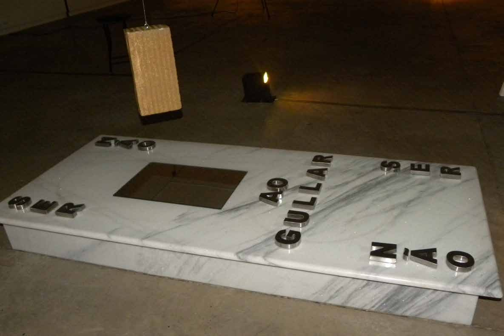

Armadilhas Semânticas
1984–2013 — do catálogo Experiência Tumulto III (CCBB, 2015)
AKD mico POLE mico POLISSE mico EPISTE mico END mico EPID mico PAND mico Cultura Natureza ENTRE A CADEIA ALIMENTAR, O CÓDIGO LINGUÍSTICO E O CÓDIGO FLORESTAL Com os pressupostos da efemeridade e da invisibilidade, essa ação conjunta de deglutição da língua portuguesa empreendida pelos micos (na qualidade de animais comedores de banana e de sufixos, do ponto de vista da morfo- logia linguística) provocada pela armadilha semântica construída por Barja, o que nos é dado a ver é o registro em tempo real e com documentação a posteriori, capturado por câmeras de segurança, da composição das palavras e seu posterior desaparecimento com a intervenção de seus sufixos/símios. Volto então aos fios/linhas/trilhas da Rua Araucária. Penso em escritura e em inscrições, tantas vezes imaginadas pelo habitante da cidade, quando confrontado com um céu recoberto de redes elétricas. Penso na separação e justa- posição entre natureza e cultura que a obra provoca. As duas primeiras equações poéticas (as mais antigas) trazem em si o signo do discurso, a relação direta com as letras articuladas em significados. Poderíamos falar inclusive de uma pendulação entre a tese (desenvolvida dentro da academia ) e a antítese ( gerada a partir da anterior e criando a polêmica). Sem dúvida, adjetivos que nomeiam características dentro do campo da linguagem verbal. Mas, a terceira pode ser um desvio de rota: endêmico associa-se à contaminação. Às questões biológicas e biogeográficas. No jogo
de pares opositivos, adivinhamos o futuro aparecimento do epide mico. Com a nova armadilha, parece haver uma maior aproximação ao ato que realiza a obra. Deslocando-se da cadeia de sentido para a cadeia alimentar, ele evoca mais diretamente o que se vê no vídeo documento: a materialidade da escrita alimentando a si mesma (às próprias custas).Yes, nós temos bananas.... Ainda temos? A concretude das letras as sujeita ao ato inaugural da modernidade na arte brasileira, aquele que a partir da semana de arte moderna de 22, configurou-se em Manifesto. Subvertido pela proposta poética do artista da organização do quadro-armadilha à documentação da atração que as bananas exercem sobre os micos - traveste-se em antropofa- gia oswaldiana. A obra desaparece para poder realizar-se. Paradoxo que passa a ter desdobramentos na nova apre- sentação das pequenas equações semânticas. As palavras, antes de sua deglutição, são congeladas e reproduzidas em gravuras (congelamento do ato, memento mori). Em sua configuração inicial (de 1986), as duas primeiras obras foram apresentadas como performance em ato ou seja, os micos foram levados para dentro da galeria.. Comer a ideia que encarnavam era algo que poderia ver ao vivo e a cores (se as frutas/letras apetecessem aos animais. Agora, Barja nos oferece a performance da (auto) destruição capturada na mata em torno do casarão. Poesia que se faz na concretização mais básica de manutenção da vida. Do ponto de vista conceitual, também parece haver um deslocamento: se em sua configuração primeira elas eram possibilidades poéticas; aqui, a ênfase se desloca para a documentação do ato (real e metafórico). Naquilo que nos induzia a uma espécie de resolução da charada, agora nos convoca a tomar um tempo (às vezes tão longo quanto o dos pesquisadores de campo) de sermos testemunhas oculares da transformação metafórica, centro da produção poética (verbal ou imagética). Bom apetite!. Marília Panitz - Crítica de arte - Mestre em Teoria e História da Arte - UnB, Brasília. Professora do Instituto de Arte – UnB, Brasília.
INBETWEEN THE FOODCHAIN, THE LINGUISTIC CODE AND THE FORESTRY CODE With the presuppositions of ephemerity and invisibility, the collective action of ingesting the Portuguese language by the tamarins (being animals that eat bananas and suffixes, from the morphological point of view of the langua- ge), provoked by the “semantic trap” built by Barja, what is shown us is both the live taping and a posteriori docu- mentation, captured by security cameras, of the composition of the works and their later disappearance with the intervention of its suffixes/apes. I back to the threads/lines/trails of the Araucaria street. I think about writing and inscriptions, imagined so many times by the city dweller when confronted with a sky of electrical networks. I think about the separation and juxta- position between nature and culture that the work provokes. The first two poetical equations (the oldest ones) have the sign of discourse themselves, the direct relation with the letters articulated into meanings. We could even talk about a swinging motion between the thesis (developed in the Academy) and the antithesis (generated from the first thus creating polemic). These are, without a doubt, adjectives that name characteristics within the field of ver- bal language. The third characteristic, though, may be a diversion: endemic is associated with contamination. With SEMANTIC TRAP 1984-2013 AKD emic POLE micist POLYSE mic EPISTE mic ENDE mic EPIDE mic PANDE mic Culture Nature
biological and biogeographical questions. Looking at the opposing pairs, we guess the future coming of the epide mico. With this new trap, there seems to be a greater closeness to the act that brings into being the work. Moving from the chain of meaning to the food chain, he evokes with more directness what is seen in the video document: the materiality of writing feeding itself (at its own expense) “Yes, we have bananas...”. Have we? The concreteness of the letters subjects them to the inaugural act of modernity in Brazilian art, the one which starting from the 1922 Modern Art Week, became a Manifest. Subverted by the artist’s poetical proposition – from the organization of the painting-trap to the documentation of the attraction the bananas exert over the tamarins – morphing into an Oswaldian anthropophagy. In order to take place the work disappears. This paradox then unfolds into the presentation of new semantic equations. The words, before being swallowed, are frozen and reproduced in print (it’s the act that’s frozen, memento mori). In its initial configuration (from 1986), the first two works were pre- sented as live performances - that is, the tamarins were taken to the gallery.. If the fruits/letter pleased the animals, one could see the act come alive. Barja now offers us the performance of (auto) destruction captured in the bushes around the mansion. Poetry created in life’s most basic survival act. From a conceptual viewpoint, there seems to be a displacement: if in the initial configuration they were poetical possibilities, here, the emphasis is displaced to the documentation of the act (both real and metaphoric). That which first induced us to unveil a sort of charade, now summons us to take a break (at times as long as field researchers) and to be eyewitnesses of the metaphorical trans- formation, center of the poetical production (verbal or of images). Naquilo que nos induzia a uma espécie de reso- lução da charada, agora nos convoca a tomar um tempo (às vezes tão longo quanto o dos pesquisadores de campo) de sermos testemunhas oculares da transformação metafórica, centro da produção poética (verbal ou imagética). Bon appetite!. Marília Panitz - Art criticism - Master in Theory and History of Art - UnB, Brasilia. Professor of the Art Institute - UnB, Brasilia.
Textos que falam desta obra
JONAS JONAS: DESLOCAMENTOS E REPETIÇÕES EM INSTALAÇÃO MULTIMÍDIA Maria Thereza Azevedo VERBIVOCOVISUALIDADE NA INTALAÇÃO “JONAS” ANTÔNIO MIRANDA SUMÁRIO INSTITUCIONAL CENTRO CULTURAL BANCO DO BRASIL EXPERIÊNCIA TUMULTO III Marisa Flórido César Curadora ANTOLOGIA ONDE O ENIGMA É O ÍMÃ Adolfo Montejo Navas ARMADILHAS SEMÂNTICAS ENTRE A CADEIA ALIMENTAR, O CÓDIGO LINGUÍSTICO E O CÓDIGO FLORESTAL. Marília Panitz VÍDEO INTERVENÇÕES FICÇÕES CRIADORAS Marisa Flórido César A VITÓRIA DO GALLO DESPACHO NA DUNA
Catálogo Experiência Tumulto III — pág. 5trabalhos, o seu lado abrupto, sob uma aparência rigorosamente construtiva. A sua mira- gem construída não é simplificadora ou unificadora como as das peças decorativas. Aqui nada se consola. Aliás, não estamos nas brumas dos idealismos con- venientes, nesse paraíso da política, vendido como principio de realidade. Aqui vale a interrupção, a estranheza, a geometria da fissura como uma lente. Hiato antes que Discurso. Diz - curso antes que poder. Depois do reconhecimento de um grande bastidor de questões – como preocupações e não meras for- mulações – de ordem estética e de ordem cultural às (semânticas dadas, neoconcretas postas em tensão, leituras de conflitos/situações paradoxais), a poéti- ca de Wagner Barja, comporta uma fenomenologia artística em aberto, inclusive como meditação físi- co-tecnológica, sempre se instala numa construção de enigmas, no âmbito de uma perplexidade crítica que muito nos interessa. Pois, no fundo, e depois da passagem do império das hermenêuticas com as suas carruagens, eu vejo que esses enigmas se man- tem como construções. Onde o enigma é o ímã que nos atrai. Adolfo Montejo Navas - texto extraído do livro Instalações Barja - 2005.
Catálogo Experiência Tumulto III — pág. 42ARMADILHAS SEMÂNTICAS 1984-2013 AKD mico POLE mico POLISSE mico EPISTE mico END mico EPID mico PAND mico Cultura Natureza ENTRE A CADEIA ALIMENTAR, O CÓDIGO LINGUÍSTICO E O CÓDIGO FLORESTAL Com os pressupostos da efemeridade e da invisibilidade, essa ação conjunta de deglutição da língua portuguesa empreendida pelos micos (na qualidade de animais comedores de banana e de sufixos, do ponto de vista da morfo- logia linguística) provocada pela armadilha semântica construída por Barja, o que nos é dado a ver é o registro em tempo real e com documentação a posteriori, capturado por câmeras de segurança, da
Catálogo Experiência Tumulto III — pág. 54o: a materialidade da escrita alimentando a si mesma (às próprias custas).Yes, nós temos bananas.... Ainda temos? A concretude das letras as sujeita ao ato inaugural da modernidade na arte brasileira, aquele que a partir da semana de arte moderna de 22, configurou-se em Manifesto. Subvertido pela proposta poética do artista da organização do quadro-armadilha à documentação da atração que as bananas exercem sobre os micos - traveste-se em antropofa- gia oswaldiana. A obra desaparece para poder realizar-se. Paradoxo que passa a ter desdobramentos na nova apre- sentação das pequenas equações semânticas. As palavras, antes de sua deglutição, são congeladas e reproduzidas em gravuras (congelamento do ato, memento mori). Em sua configuração inicial (de 1986), as duas primeiras obras foram apresentadas como performance em ato ou seja, os micos foram levados para dentro da galeria.. Comer a ideia que encarnavam era algo que poderia ver ao vivo e a cores (se as frutas/letras apetecessem aos animais. Agora, Barja nos oferece a performance da (auto) destruição capturada na mata em torno do casarão. Poesia que se faz na concretização mais básica de manutenção da vida. Do ponto de vista c
Catálogo Experiência Tumulto III — pág. 55side, all with a rigorously construc- tive appearance. The mirage he constructs lacks the simplifying or unifying charac- teristics of decorative pieces and offers no consolation. After all, we are not in the mists of convenient idealisms in this para- dise of politics, sold to us as a principle of reality. What matters here is the interrup- tion, the discomfort, the geometry of the fissure as a lens. Hiatus before discourse. Discourse before power. After acknowledging the abundance of questions that arise genuine concerns and not mere formulations regarding aesthe- tic and cultural aspects (semantics, neo- -concretism under pressure, interpreta- tions of conflicts/paradoxical situations), the poetics of Wagner Barja function as an open artistic phenomenology, even as a physical-technological meditation, constantly involved in the construction of enigmas, under the scope of a critical perplexity that interests us greatly. Deep down, therefore, and after the empire of hermeneutics passes with its carriages, I see that these enigmas hold up as cons- tructions where the enigma is the magnet that attracts us. Adolfo Montejo Navas, extract from Instalações Barja - 2005. WHERE THE ENIGMA
Catálogo Experiência Tumulto III — pág. 106FICHA TÉCNICA Curadoria Marisa Flórido Cesar Coordenação e Supervisão Opera- cional Maria Gorette Azevedo Barja Produção executiva Jean Ceolin Textos Marisa Flórido Antonio Miranda Maria Thereza Azevedo Marília Panitz Mercedez Replinger Evgene Bavcar Projeto Gráfico Célia Matsunaga Mídias Digitais e edição de vídeos Alexandre Rangel Iluminação Jay Barros Fundição Otto Behrend Modelagem Cesar Becker Camila Araújo Luminotécnica e animação JM Tecnologia em eventos Fotografia Peninha Daniel Mira Assessoria de Imprensa Atelier Comunicação Personalizada Captura de imagem, foto e monta- gem “Armadilhas Semânticas” Glênio Lima Fotografia do Profeta Daniel Silva Tradução Oto Dias Becker Reifschneider Revisão Mirta Escoteguy Revisão do ingles Patrick Locke Assistente de produção Nicolle Brandão Tony Teles Juliana Martins Eletrônica Miguel Ferreira Montagem Francinaldo Jacaúna Otto Behrend Pablo Campos Suporte montagem Edenval Vaz Junior Projeto Educativo Sapoti Eventos
Catálogo Experiência Tumulto III — pág. 112sua contestação. Como promessa e ameaça, o mico (em carne, osso e sentido figurado) se alinha às bananas que formam os dois prefixos, já afirmando a sua efemeridade (seu destino é tão claro quanto o olhar que o mico lança sobre elas). Já o bicho/caixa Cubo Cruz Lápide é comedor e devorado ao mesmo tempo engole as palavras como cubo e as vomita com o cruz. As inscrições de seu interior/avesso não oferecem sentido a priori, mas a materialidade das palavras sussurradas como a afirmar a fragilidade dos discursos que articulamos. A outra cruz pertence ao grupo de trabalhos que compõe a idéia das “Armadilhas Indígenas”, de Bené Fonteles: é o seu Mognos Dei, mais uma obranome que brinca de confundir referências e inscreve seu nome com a farinha de trigo da hóstia, matéria prima metaforizada na prática cristã, cujo ritual pressupõe a deglutição do corpo do Cristo. O que nos leva a uma outra referência certamente associada a “prática antropofágica” das tantas letras... àquela cabeceira sem cama do “DA²”, como equação e operação metonímica, uma declaração de filiação ideológica. Um Joseph, animal religioso: Desafiado a propor sua versão sobre o olhar contemporâneo em torno de Joseph Beuys, B
Livro Instalações Barja — pág. 8se abrirem as páginas, tem as suas palavras projetadas para frente, em diversos planos, sugerindo múltiplas relações de significado” (22). Anterior a estas experiências se poderia assinalar também como referência os “Poetamenos” de 1953, também de Augusto de Campos, definidos como verbivocovisual, textos sincréticos de palavra, som e forma visual que eliminam a frase, o verso e potencializam uma espécie de sopa de letras colorida cujo sentido se organiza por blocos, que exigem do espectador um importante esforço para combiná-las e encontrar um sentido. Barja, interessado nessas práticas intersemânticas, recupera também conceito de Próbjeto, termo cunhado pelo artista gráfico e músico Rogério Duarte Guimarães próximo, nos anos sessenta, à obra de Hélio Oiticica para definir um projeto como objeto em si; valorização da experiência artística onde o vivencial e o processual adquirem importância, inclusive mais do que a própria realização da idéia , o que abre possibilidades de agrupamento entre o texto e o objeto (23). Um espaço onde é possível desenvolver algumas de suas preocupações em relação à linguagem e à forma plástica: “Acredito que a insurreição formal ocorrida na pintura mode
Livro Instalações Barja — pág. 19s seus trabalhos, o seu lado abrupto, sob uma aparência rigorosamente construtiva. A sua miragem construída não é simplificadora ou unificadora como as das peças decorativas. Aqui nada se consola. Aliás, não estamos nas brumas dos idealismos convenientes, nesse paraíso da política, vendido como principio de realidade. Aqui vale a interrupção, a estranheza, a geometria da fissura como uma lente. Hiato antes que Discurso. Diz - curso antes que poder. Depois do reconhecimento de um grande bastidor de questões – como preocupações e não meras formulações – de ordem estética e de ordem cultural às (semânticas dadas, neoconcretas postas em tensão, leituras de conflitos/situações paradoxais), a poética de Wagner Barja, comporta uma fenomenologia artística em aberto, inclusive como meditação físico-tecnológica, sempre se instala numa construção de enigmas, no âmbito de uma perplexidade crítica que muito nos interessa. Pois, no fundo, e depois da passagem do império das hermenêuticas com as suas carruagens, eu vejo que esses enigmas se mantem como construções. Onde o enigma é o ímã que nos atrai. onde o enigma é o ímã Adolfo Montejo Navas Curador e crítico de arte Adolfo Montejo Navas
Livro Instalações Barja — pág. 33Foi a cruz o primeiro símbolo fincado na terra brasilis poderia ter sido de mogno como na obra de Barja a cruz da primeira missa foi também uma grande armadilha cristã para os indígenas como era uma armadilha a que os indígenas colocavam na estrada para furar pneus de caminhões dos que roubavam madeira de suas reservas armadilhas uma das quais o artista incrusta entre a palavra em latim mognus dei escrita com massa de fazer hóstia (comunhão dos canibais do Senhor ao mesmo tempo que extermínio da raça) a palavra chave posta no vórtice do cruzeiro emoldurado pelas mil utilidades domésticas de uma palha de aço com as quais Barja dá um efeito inusitado e irreverente como quase toda obra que concebe com maestria não só artística mais também antropológica que permeia mognus dei ao refletir sobre a genial autodefesa de uma etnia os índios isolados da Amazônia que desenvolveram uma estratégia de guerrilha que poderia ser uma
Livro Instalações Barja — pág. 37r abrupt side, all with a rigorously constructive appearance. The mirage he constructs lacks the simplifying or unifying characteristics of decorative pieces and offers no consolation. After all, we are not in the mists of convenient idealisms in this paradise of politics, sold to us as a principle of reality. What matters here is the interruption, the discomfort, the geometry of the fissure as a lens. Hiatus before discourse. Dis- course before power. After acknowledging the abundance of questions that arise genuine concerns and not mere formulations regarding aesthetic and cultural aspects (semantics, neoconcretists under pressure, interpretations of conflicts/paradoxical situations), the poetry of Wagner Barja functions as an open artistic phenomenology, even as a physical-technological meditation, constantly involved in the construction of enigmas, under the scope of a critical perplexity that interests us greatly. Deep down, therefore, and after the empire of hermeneutics passes with its carriages, I see that these enigmas hold up as constructions. Where the enigma is the magnet that attracts us. Adolfo Montejo Navas Rio de Janeiro, 10 November 2005 where the enigma is the mag
Livro Instalações Barja — pág. 112TE/R.J. EXPOSIÇÕES COLETIVAS 2005-Situações Brasília - CCBE - Caixa - Arte Comtemporânea/DF 2004-Visões Espanholas, Poéticas Brasileiras - CCDE - Conjunto Cultural Caixa/DF 2000-Retrospectiva Macunaíma - Gal. Macunaima - FUNARTE/RJ 1996-Panorama de Artes Visuais - Gal. Rubem Valentim - FCDF/DF 1995-A Grande Viagem “Passaporte Para O Ano 2000” S.P. BSB,Washington 1992-Prêmio aquisição Salão de Artes Visuais - SC/DF 1991-Um Olhar Sobre Beuys - Museu de Arte de Brasília - MAB 1991-Coleção Cândido Mendes - Museu de Arte Moderna - MAM/RJ 1991-Arte Contemporânea Centro-Oeste - Museu de Arte/GO 1990-Armadilhas Indígenas - Galeria Athos Bulcão-FCDF/DF 1988-Chegando Ao Século 21 - MNBA/RJ 1985-Conexão Urbana - RJ/SP - MAM/RJ 1984-Salão Carioca- Metrô/RJ 1984-O Rosto e a Obra - IBEU/RJ 1983-Novíssimos-Galeria - IBEU/RJ FORMAÇÃO NOTÓRIO SABER, reconhecido p/ CÂMARA de EDUCAÇÃO SUPERIOR / Conselho Nacional de Educação, habilitação em Historia da Arte - Artes Plásticas - Educação Artística, concedido pelo Conselho Federal de Educação MEC- 1996 MESTRADO em Arte e Tecnologia da Imagem / Deptº de Pós Graduação VIS -IdA- Universidade de Brasília/UnB 1998. ( * ) “Experiência Tumulto” - Termo extraíd
Livro Instalações Barja — pág. 118
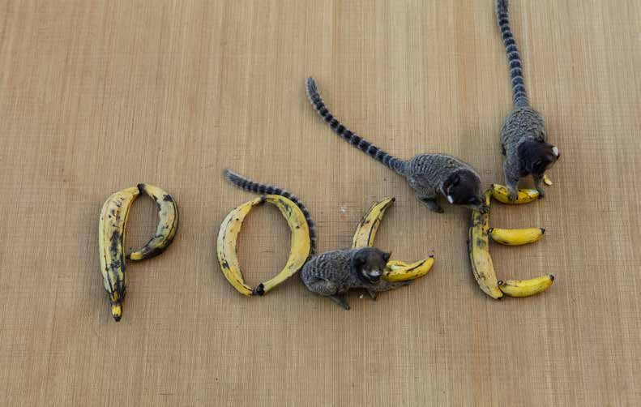

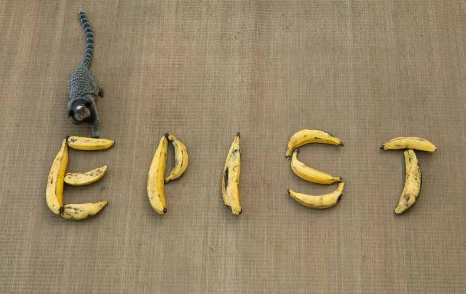

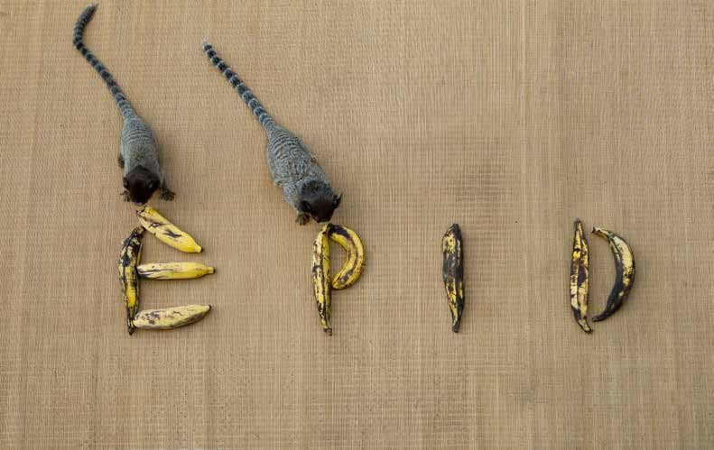

Vídeo intervenções
Registros em vídeo das intervenções e performances de Wagner Barja: A Vitória do Gallo (Cachoeira do Arari, Ilha de Marajó — Funarte) e Despacho na Duna, crítica ao circuito de arte.
Registro em vídeo da mostra Experiência Tumulto III, no CCBB Brasília (2015).
A Vitória do Gallo
Vídeo · 5′ — do catálogo Experiência Tumulto III (CCBB, 2015)
Wagner Barja foi enviado pela Funarte (Fundação Nacional de Arte), para Nossa Senhora de Cachoeira de Arari, no Pará. A cidade abriga o Museu do Marajó, fundado em 1972 pelo padre italiano, Giovanni Gallo, importante líder local, junto com a população (em parte re- manescente de comunidades quilombolas). Em torno do museu do homem marajoara e de sua cosmologia cultural, a vida social seria estruturada. Após a morte do padre, a comunidade continuou a cres- cer imprensada entre o latifúndio e o rio, acirrando os conflitos entre o poder local (latifundiários) e as lideranças comunitárias. A proposta do artista consistiu então na realização por todos de um grande ato performático, uma celebração ocupando parte daquelas terras improdutivas com o universo cultural do homem marajoara: o boi-bumbá, a bandeira do Divino, entre outros. No dia do evento, Barja observou algo inusitado: cerca de 300 pessoas pe- las ruas, ocupadas com os seus afazeres do dia a dia, seguravam um papel enrolado na mão, uma folha em branco. Homens, mu- lheres, crianças, prostitutas marajoaras simulavam assim a posse de seu terreno. Ou seja, eles ficcionalizaram a reversão da própria situação precária, imaginaram e encenaram a mudança em suas vidas. Com a festa do boi, a festa da ocupação, fundaram o Bairro do Gallo. A prefeitura assumiu uma posição solidária, e eles lá ain- da permanecem. O artista foi ali um catalisador das potências adormecidas que precisavam apenas de um gatilho para emergir. Ficção não é a criação de um mundo ilusório se contrapondo ao real: são formas inauditas e ousadas de conexão entre um mundo referencial e outros mundos (inclusive potenciais) que atravessam ou orbitam à sua volta. Essa é sua potência cosmogônica, sua potência de imaginação, liberdade e criação. Arte não é o que toma para si a tarefa de ficcionalizar para o outro, é o que abre ao outro as con- dições e possibilidades para ele operar a própria ficção criadora. Ficção, phantasia para os gregos, designava “as artes do forjar”. São gestos de imaginar e forjar, gestos de uma reinvenção radical dos mundos. Marisa Flórido César, 2014 FICÇÕES CRIADORAS Marisa Flórido César
A VITÓRIA DO GALLO – 5’ - rodado em Cachoeiro do Ararí – Ilha de Marajó. Registro da intervenção urbana promovida pelo artista que teve por objetivo assentar famílias em área improdutiva.
Textos que falam desta obra
JONAS JONAS: DESLOCAMENTOS E REPETIÇÕES EM INSTALAÇÃO MULTIMÍDIA Maria Thereza Azevedo VERBIVOCOVISUALIDADE NA INTALAÇÃO “JONAS” ANTÔNIO MIRANDA SUMÁRIO INSTITUCIONAL CENTRO CULTURAL BANCO DO BRASIL EXPERIÊNCIA TUMULTO III Marisa Flórido César Curadora ANTOLOGIA ONDE O ENIGMA É O ÍMÃ Adolfo Montejo Navas ARMADILHAS SEMÂNTICAS ENTRE A CADEIA ALIMENTAR, O CÓDIGO LINGUÍSTICO E O CÓDIGO FLORESTAL. Marília Panitz VÍDEO INTERVENÇÕES FICÇÕES CRIADORAS Marisa Flórido César A VITÓRIA DO GALLO DESPACHO NA DUNA
Catálogo Experiência Tumulto III — pág. 5A Vitória do gallo A VITÓRIA DO GALLO – 5’ - rodado em Cachoeiro do Ararí – Ilha de Marajó. Registro da intervenção urbana promovida pelo artista que teve por objetivo assentar famílias em área improdutiva.
Catálogo Experiência Tumulto III — pág. 63


Despacho na Duna
Vídeo · 3′ — do catálogo Experiência Tumulto III (CCBB, 2015)
DESPACHO NA DUNA - Vídeo instalação
Vídeo-registro da intervenção “Despacho na Duna” - 3’, uma crítica ao circui- to burocrático da cultura (Natal, RN 2005). Wagner Barja e Ronald Duarte.
Textos que falam desta obra
JONAS JONAS: DESLOCAMENTOS E REPETIÇÕES EM INSTALAÇÃO MULTIMÍDIA Maria Thereza Azevedo VERBIVOCOVISUALIDADE NA INTALAÇÃO “JONAS” ANTÔNIO MIRANDA SUMÁRIO INSTITUCIONAL CENTRO CULTURAL BANCO DO BRASIL EXPERIÊNCIA TUMULTO III Marisa Flórido César Curadora ANTOLOGIA ONDE O ENIGMA É O ÍMÃ Adolfo Montejo Navas ARMADILHAS SEMÂNTICAS ENTRE A CADEIA ALIMENTAR, O CÓDIGO LINGUÍSTICO E O CÓDIGO FLORESTAL. Marília Panitz VÍDEO INTERVENÇÕES FICÇÕES CRIADORAS Marisa Flórido César A VITÓRIA DO GALLO DESPACHO NA DUNA
Catálogo Experiência Tumulto III — pág. 5DESPACHO NA DUNA - Vídeo instalação
Catálogo Experiência Tumulto III — pág. 68Despacho na Duna Vídeo-registro da intervenção “Despacho na Duna” - 3’, uma crítica ao circui- to burocrático da cultura (Natal, RN 2005). Wagner Barja e Ronald Duarte.
Catálogo Experiência Tumulto III — pág. 69


Jonas — instalação inédita
Jonas, o profeta desobediente, é engolido por uma baleia em alto mar e lá fica por três dias, em câmara escura. Barja, o artista tumultuador, devolve o visitante a esse ventre: águas projetadas, mônadas abertas, palavra e imagem em suspensão.
As páginas seguintes do catálogo documentam a instalação multimídia inédita criada para Experiência Tumulto III, com texto de Maria Thereza Azevedo (“Jonas: deslocamentos e repetições em instalação multimídia”) e de Antônio Miranda (“Verbivocovisualidade na instalação Jonas”).
A textura de água projetada na instalação Jonas — a mesma imagem que atravessa o fundo desta página.
Textos que falam da instalação
JONAS JONAS: DESLOCAMENTOS E REPETIÇÕES EM INSTALAÇÃO MULTIMÍDIA Maria Thereza Azevedo VERBIVOCOVISUALIDADE NA INTALAÇÃO “JONAS” ANTÔNIO MIRANDA SUMÁRIO INSTITUCIONAL CENTRO CULTURAL BANCO DO BRASIL EXPERIÊNCIA TUMULTO III Marisa Flórido César Curadora ANTOLOGIA ONDE O ENIGMA É O ÍMÃ Adolfo Montejo Navas ARMADILHAS SEMÂNTICAS ENTRE A CADEIA ALIMENTAR, O CÓDIGO LINGUÍSTICO E O CÓDIGO FLORESTAL. Marília Panitz VÍDEO INTERVENÇÕES FICÇÕES CRIADORAS Marisa Flórido César A VITÓRIA DO GALLO DESPACHO NA DUNA
Catálogo Experiência Tumulto III — pág. 5artística de Wagner Barja, artista radicado na capital federal. A mostra nos revela uma obra “al- tamente coesa” que, constituída ao longo de três dé- cadas, sempre foi marcada pelo caráter experimen- tal, irreverente e reflexivo, pelo trânsito por diversas mídias e linguagens artísticas, pelo cruzamento de diferentes domínios, saberes e sensibilidades. A exposição conta com trinta obras que eviden- ciam as diversas linguagens com as quais o artista trabalha – poesia visual, vídeos e fotografias, escul- turas e instalações, performances e intervenções urbanas – e com uma instalação inédita, “Jonas”. Ao realizar essa antologia, o Centro Cultural Banco do Brasil possibilita ao público a experimentação da arte contemporânea por meio de novas linguagens, contribui para a educação e democratização da cul- tura e valoriza a produção artística local. CENTRO CULTURAL BANCO DO BRASIL
Catálogo Experiência Tumulto III — pág. 6tudo, “artesemnome.” lugar do homem e de sua fala e imagem precisas): tal falha fundamental é a própria condição de sua existência. Em um mundo ainda a ser visto, nomea- do, recriado, é a partir do silêncio que se enunciam as palavras, é a partir do invisível que a imagem cintila, enfrentando tanto a incompletude como a satura- ção cega das visibilidades e a tirania dos discursos. Tropeçamos na vertigem da palavra, na cegueira das imagens. Não por acaso, ambas questões importan- tes para Wagner Barja. Experiência Tumulto III - divi- dida em duas sessões, “Antologia” e a instalação iné- dita “Jonas”- reúne sua produção realizada ao longo de três décadas e que sempre transitou por diver- sas mídias e expressões artísticas, por domínios distintos, cruzando e interrogando os saberes e as sensibilidades. Somos introduzidos em um universo que transborda em poemas “animaverbovocovisu- ais” (suas “obranomes”), instalações e intervenções, performances ou vídeos. Uma profusão de ima- gens, objetos e palavras, textos e personagens que se entrelaçam, como se fundassem ou revolvessem um mundo em contínuo processo de transmutação. Uma cosmogonia fabulosa em que vagam criaturas bizarras, híbridos
Catálogo Experiência Tumulto III — pág. 8JONAS FOTO Daniel Mira
Catálogo Experiência Tumulto III — pág. 76Jonas, o profeta desobediente é engolido por uma baleia em alto mar e lá fica por três dias, em ca- marinha. Barja, o artista tumultuador, vomita as vértebras da baleia, mas antes, cava-lhes no osso para injetar/enfurnar imagens, vertendo e inver- tendo memórias de águas naquilo que dá susten- tação aos corpos. Victor Turner afirma que toda experiência é um risco e uma trans-forma. Na obra Jonas, de Wagner Barja, a experiência/risco é a de um performador invisível que pratica a ideia de corpo sem órgãos de Antonin Artaud. Des-organiza e des-obedece a ordem das coisas. Tira as vértebras da baleia do
Catálogo Experiência Tumulto III — pág. 77ofundas, rasas, turvas, tranquilas, violentas, vermelhas. A água, geradora de vida e de travessia, não cessa de dissolver-se e transformar-se. Bachelard lembra que o sonhador da água é um ser em vertigem que deixa constan- temente desmoronar algo de si. Para ele a água é matéria que está sempre prestes a tornar-se outra. Os híbridos e os fora de lugar provocam estranha- mentos, como provocaram os monstros míticos do medievo ou os ready made de Marcel Duchamp. Tu- multuam, des-consertam, des-estabilizam e levam a rearranjos em nossa percepção. Obra síntese da exposição Experiência Tumulto III, Jonas carrega a trajetória do artista, que vem praticando desloca- mentos desde Deitado eternamente de 1986. É um tirar coisas do lugar e reordenar, mas não, sem antes passar pelas entranhas do tumulto antropofágico, que pode instigar territórios de existência e alterar os modos de subjetivação hegemônicos. No caldeirão de bruxas da arte contemporânea, me- xem-se poções que misturam procedimentos trazi- dos da história da arte. Em Jonas, além de evocar o mítico/bíblico Jonas, engolido pela baleia e as práti- cas medievais da fundição, o artista nos remete ao dadaísmo e ao minimalismo, pois pra
Catálogo Experiência Tumulto III — pág. 78VERBIVOCOVISUALIDADE NA INTALAÇÃO “JONAS” ANTÔNIO MIRANDA A animaverbivocovisualiade – AV3 (*) é invocada no processo de registro do conhecimento objetivo — conforme a teoria de Karl R. Popper — e segundo os propósitos de cada autor/criador em diversas áreas do conhecimento. Consequentemente, um cientista utiliza, além de textos (discursos analíticos, citações, epígrafes, etc.), ou recurso “voco” da tríade verbivo- covisual dos concretistas Haroldo e Agusto de Cam- pos/Décio Pignatari) em registro textual direto e/ou indireto (por hipertextualidade); amplia com ima- gens estáticas ou dinâmicas (“visual” e animação) para ilustrar a a
Catálogo Experiência Tumulto III — pág. 94nterpretante , no ritual semiótico se dá no estilo triádico peirceano seguinte: INTERPRETANTE OBJETO SIGNO O diagrama triangular (conforme C.K. Ogden e I. A. Richard) pretende traduzir a relação semiótica explicitada por Charles Sanders Peirce como im- perativo no entendimento da signific-ação. Não cabe aqui apresentar todos os desdobramentos dessa relação interpretante—objeto—signo, ape- nas frisar que o interpretante atua a partir de sua própria experiência, memória, visão de Mundo, ca- pacidade interpretativa, ontológica ou sensorial, dependendo da anima que anima este “olhar”. No caso de “Jonas” aqui referenciado, além dos textos de apresentação da obra, existe a possível evocação (“vocal”, subjetiva) do personagem bíblico engoli- do pela baleia, que inspirou o trabalho do artista. A “baleia” é representada objetualmente median- te “vértebras” dependuradas, não em sequência, mas em conjunto expositivo, contendo disposi- tivos eletrônicos mostrando imagens de ondas marinhas (luminosas), formando um conjunto impressionante e impactante, mas poético. Vi- sual, mas combinando objetos e imagens em movimento, completado com a projeção de um vídeo com as mesmas ondas sobre as peças “v
Catálogo Experiência Tumulto III — pág. 95of Wag- ner Barja - an artist living in the country’s capital. The exhibit reveals a “highly cohe- sive” work built in the past three decades, marked by an experimental character, ir- reverent and reflexive, and by the transit through diverse communication media and artistic languages, by the crossing of different domains, bodies of knowledge and sensibilities. The exhibit’s thirty works show the diver- se languages with which the artist works - visual poetry, videos and photography, sculptures and installations, performan- ces and urban interventions - and a never seen before installation, “Jonas”. By producing this anthology, Banco do Bra- sil’s Cultural Center gives the public a chan- ce to experiment with contemporary art through new languages, contributing to education with the democratization of cul- ture, valuing the local artistic production. CENTRO CULTURAL BANCO DO BRASIL
Catálogo Experiência Tumulto III — pág. 103which they have never had (the place of man and his speech and his precise image): this fun- damental failure is the very condition of their existence. In a world still to be seen, named, recreated, it is from the silence that words are pronounced; it is from the invisible that the image sparkles, facing both the incompleteness and the blind saturation of visibilities and the speeches’ tyranny. We stumble in the vertigo of the word, in the blindness of the images. It is no ac- cident that both are important issues for Barja. Experiência Tumulto III - divided in two sections, “Anthology” and “Jonas”, a never seen before installation - encom- passes the artist’s production, which has always transitioned through different me- ans of communication and artistic expres- sions, through distinct domains, crossing and questioning bodies of knowledge and sensibilities. We are introduced to a uni- verse that overflows in poems “animaver- bovocovisuais” (his “obrasnomes” /“work- names”), installations and interventions, performances or videos. A profusion of images, objects and words, texts and characters that are interwoven, as if they established or circled around a world in a continuous pro
Catálogo Experiência Tumulto III — pág. 104Jonah, the disobedient prophet is swallowed in the high seas by a whale and there he stays for three days, isolated. Barja, the riot artist, vomits the whale’s vertebrae, but before doing so, he digs into the bones to inject/insert images, pouring and inverting memories of waters which gives the bodies their bearing. [took out that…before read that which] Victor Turner says that every experience is a risk and a trans-form. In Wagner Barja’s work Jonas, the experience/risk is the one of an invisible performer that practices Antonin Artaud’s idea of body without or- gans, dis-organizing and dis-obeyi
Catálogo Experiência Tumulto III — pág. 108ct, through hipertextuality; she amplifies with static or dynamic images (“visual” and animation) to illustrate the presenta- tion of graphics, mathematical formulas, tag clouds, videos, interviews etc. There are no limits to the usage of these resources in an aggregating way or of a transforma- tion into a purely digital state, through the virtual composition´s own amalgam. Metaphors, audiovisual appeals, multi- media, each and every element imposed by the author´s creativity are part of the anima, in the dual sense of poiesis (crea- tion) and of the technological means used in the process. “Jonas” is an artistic installation curated museologically in a room of its own to ac- climate the creation of multimedia poet Wagner Barja. It begins with a presenta- tion of texts by Marisa Florido Cesar and Antonio Miranda — both in Portuguese and in English – in the antechamber and entryway of the main exhibit area, to in- form the public about its purposes as well as the technical and theoretical aspects of the installation. Many read before the vi- sit, others after the visit, others read twice and some don´t read at all. No problem. The true “reading”, even better, “interpre- tation” of
Catálogo Experiência Tumulto III — pág. 110Jonas em imagens


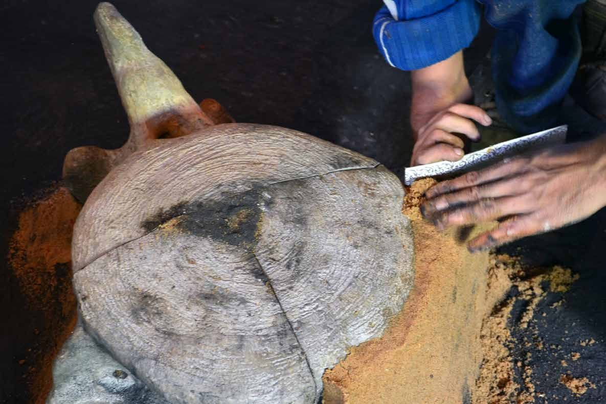


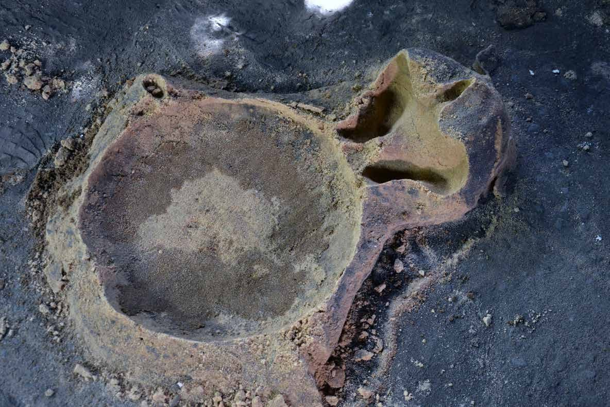

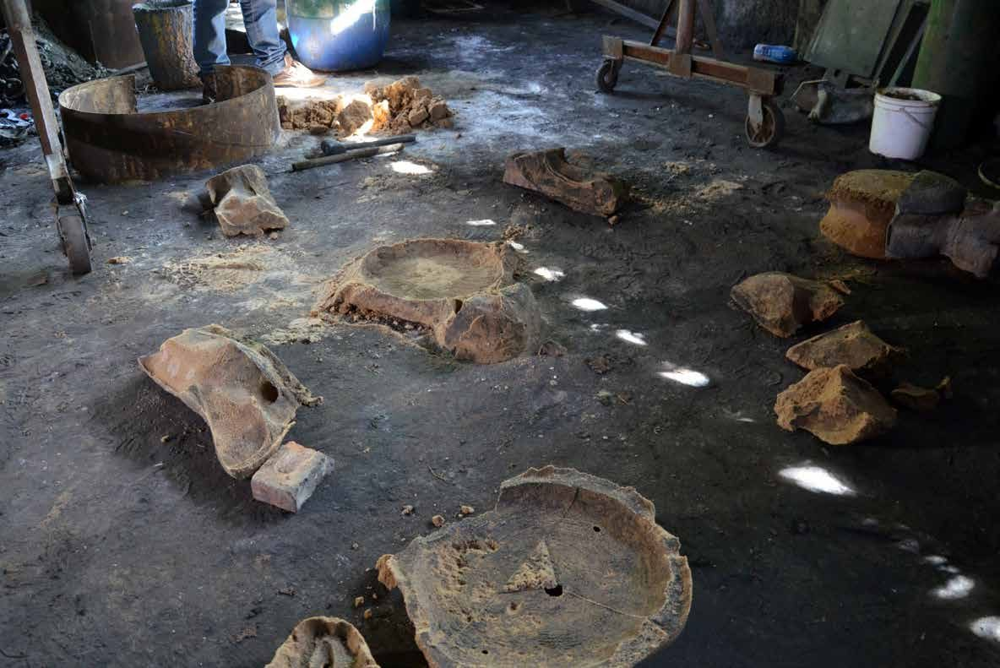

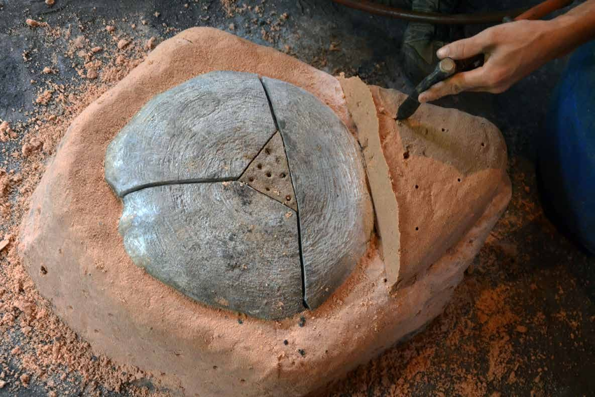

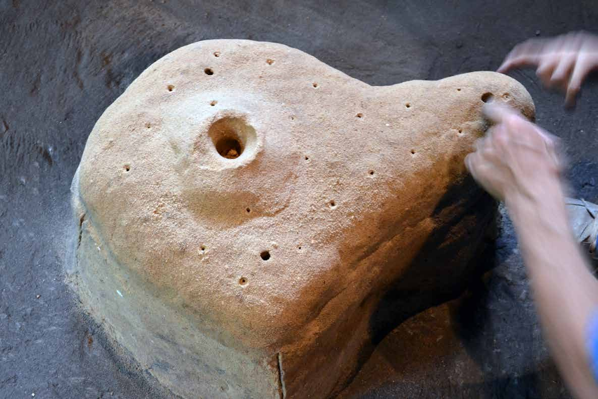

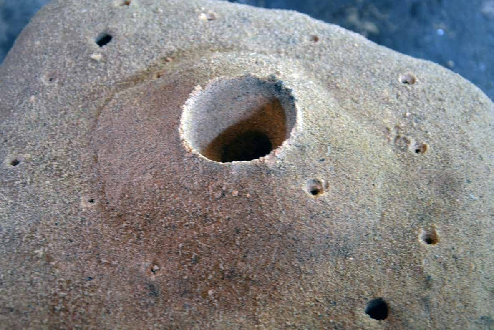


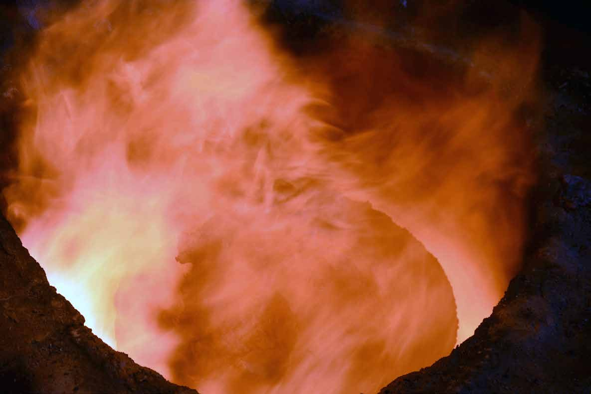